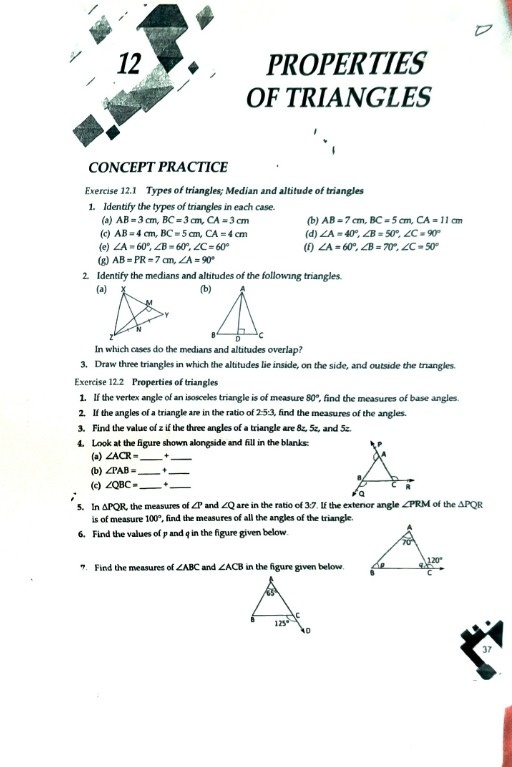

<!DOCTYPE html>
<html lang="en" data-theme="dark">
<head>
  <meta charset="UTF-8">
  <meta name="viewport" content="width=device-width, initial-scale=1.0">
  <title>Chapter 7: A Tale of Three Intersecting Lines — Pushti Study Hub</title>
  
  <!-- Google Fonts: Outfit & Space Mono -->
  <link rel="preconnect" href="https://fonts.googleapis.com">
  <link rel="preconnect" href="https://fonts.gstatic.com" crossorigin>
  <link href="https://fonts.googleapis.com/css2?family=Outfit:wght@300;400;500;600;700;800&family=Space+Mono:wght@400;700&display=swap" rel="stylesheet">
  
  <!-- FontAwesome 6.4 -->
  <link rel="stylesheet" href="https://cdnjs.cloudflare.com/ajax/libs/font-awesome/6.4.0/css/all.min.css">
  
  <!-- KaTeX 0.16.8 -->
  <link rel="stylesheet" href="https://cdn.jsdelivr.net/npm/katex@0.16.8/dist/katex.min.css">
  <script defer src="https://cdn.jsdelivr.net/npm/katex@0.16.8/dist/katex.min.js"></script>
  <script defer src="https://cdn.jsdelivr.net/npm/katex@0.16.8/dist/contrib/auto-render.min.js"></script>

  <style>
    /* ==================== ROOT VARIABLES & THEME TOKENS ==================== */
    :root {
      --bg-base: #0a0b10;
      --bg-canvas: #0f111a;
      --bg-card: #151824;
      --bg-card-hover: #1c2030;
      --surface: #1e2235;
      --surface-hover: #262b42;
      --primary: #6366f1;
      --primary-glow: #818cf8;
      --accent-teal: #14b8a6;
      --accent-amber: #f59e0b;
      --accent-coral: #f43f5e;
      --accent-purple: #a855f7;
      --text-main: #f8fafc;
      --text-title: #ffffff;
      --text-muted: #94a3b8;
      --border: rgba(255, 255, 255, 0.08);
      --border-focus: rgba(99, 102, 241, 0.4);
      --sidebar-width: 280px;
      --sidebar-collapsed-width: 62px;
      --header-height: 56px;
      --radius-sm: 6px;
      --radius-md: 10px;
      --radius-lg: 16px;
      --shadow-sm: 0 2px 8px rgba(0, 0, 0, 0.2);
      --shadow-md: 0 4px 16px rgba(0, 0, 0, 0.3);
      --shadow-lg: 0 10px 30px rgba(0, 0, 0, 0.4);
    }

    [data-theme="light"] {
      --bg-base: #f1f5f9;
      --bg-canvas: #f8fafc;
      --bg-card: #ffffff;
      --bg-card-hover: #f8fafc;
      --surface: #e2e8f0;
      --surface-hover: #cbd5e1;
      --primary: #4f46e5;
      --primary-glow: #6366f1;
      --accent-teal: #0d9488;
      --accent-amber: #d97706;
      --accent-coral: #e11d48;
      --accent-purple: #9333ea;
      --text-main: #1e293b;
      --text-title: #0f172a;
      --text-muted: #64748b;
      --border: rgba(0, 0, 0, 0.08);
      --border-focus: rgba(79, 70, 229, 0.4);
      --shadow-sm: 0 2px 8px rgba(0, 0, 0, 0.05);
      --shadow-md: 0 4px 16px rgba(0, 0, 0, 0.08);
      --shadow-lg: 0 10px 30px rgba(0, 0, 0, 0.12);
    }

    /* ==================== GLOBAL RESET & BASE ==================== */
    *, *::before, *::after {
      box-sizing: border-box;
      margin: 0;
      padding: 0;
    }
    html {
      scroll-behavior: smooth;
      font-size: 15px;
    }
    body {
      font-family: 'Outfit', -apple-system, BlinkMacSystemFont, 'Segoe UI', Roboto, sans-serif;
      background-color: var(--bg-base);
      color: var(--text-main);
      line-height: 1.6;
      min-height: 100vh;
      display: flex;
      flex-direction: column;
      overflow-x: hidden;
      transition: background-color 0.3s ease, color 0.3s ease;
    }

    /* Universal Button Reset — Zero White Patches (SOP Mandate) */
    button {
      background: transparent;
      border: none;
      outline: none;
      font-family: inherit;
      color: inherit;
      cursor: pointer;
    }

    /* ==================== SITE HEADER ==================== */
    .site-header {
      position: sticky;
      top: 0;
      z-index: 1000;
      height: var(--header-height);
      background: var(--bg-canvas);
      border-bottom: 1px solid var(--border);
      display: flex;
      align-items: center;
      justify-content: space-between;
      padding: 0 1.5rem;
      backdrop-filter: blur(12px);
      -webkit-backdrop-filter: blur(12px);
    }
    .header-left {
      display: flex;
      align-items: center;
      gap: 0.6rem;
      font-size: 0.95rem;
      font-weight: 500;
    }
    .header-left a {
      color: var(--text-muted);
      text-decoration: none;
      transition: color 0.2s ease;
      display: inline-flex;
      align-items: center;
      gap: 0.4rem;
    }
    .header-left a:hover {
      color: var(--primary-glow);
    }
    .breadcrumb-separator {
      color: var(--text-muted);
      opacity: 0.6;
    }
    .breadcrumb-current {
      color: var(--text-title);
      font-weight: 600;
    }
    .header-right {
      display: flex;
      align-items: center;
      gap: 1rem;
    }
    .battery-pill {
      display: inline-flex;
      align-items: center;
      gap: 0.4rem;
      padding: 4px 10px;
      border-radius: 20px;
      font-size: 0.78rem;
      font-weight: 600;
      background: rgba(16, 185, 129, 0.12);
      border: 1px solid rgba(16, 185, 129, 0.3);
      color: #10b981;
    }
    .theme-toggle-btn {
      display: inline-flex;
      align-items: center;
      gap: 0.4rem;
      padding: 5px 12px;
      border-radius: 20px;
      font-size: 0.82rem;
      font-weight: 600;
      background: var(--surface);
      border: 1px solid var(--border);
      color: var(--text-main);
      transition: all 0.2s ease;
    }
    .theme-toggle-btn:hover {
      background: var(--surface-hover);
      border-color: var(--primary-glow);
    }

    /* ==================== APP LAYOUT & SIDEBAR DOCK RAIL ==================== */
    .app-layout {
      display: flex;
      flex: 1;
      width: 100%;
      min-height: calc(100vh - var(--header-height));
      position: relative;
    }

    /* Sidebar Dock Rail — 62px collapsed width, zero peeking text (SOP v2.6 Mandate) */
    .sidebar {
      position: sticky;
      top: var(--header-height);
      height: calc(100vh - var(--header-height));
      width: var(--sidebar-collapsed-width);
      min-width: var(--sidebar-collapsed-width);
      max-width: var(--sidebar-collapsed-width);
      background: var(--bg-canvas);
      border-right: 1px solid var(--border);
      display: flex;
      flex-direction: column;
      z-index: 100;
      overflow: hidden; /* Strict containment: zero text peeking */
      transition: width 0.25s cubic-bezier(0.4, 0, 0.2, 1),
                  max-width 0.25s cubic-bezier(0.4, 0, 0.2, 1),
                  min-width 0.25s cubic-bezier(0.4, 0, 0.2, 1);
    }

    /* Expanding on hover (with standard delay) or when pinned */
    .sidebar:hover, .sidebar.pinned {
      width: var(--sidebar-width);
      min-width: var(--sidebar-width);
      max-width: var(--sidebar-width);
      box-shadow: 10px 0 30px rgba(0, 0, 0, 0.35);
    }

    .sidebar-tabs {
      display: flex;
      flex-direction: column;
      gap: 6px;
      padding: 8px 6px;
      flex: 1;
      overflow-y: auto;
      overflow-x: hidden;
      box-sizing: border-box;
    }

    .tab-btn {
      display: flex;
      align-items: center;
      justify-content: flex-start;
      width: 100%;
      height: 44px;
      min-height: 44px;
      border-radius: 10px;
      padding: 0 6px;
      color: var(--text-muted);
      transition: all 0.2s ease;
      position: relative;
      user-select: none;
      white-space: nowrap;
      overflow: hidden;
      box-sizing: border-box;
      border: 1px solid transparent;
      background: transparent;
      cursor: pointer;
    }
    .tab-btn:hover {
      background: var(--surface);
      color: var(--text-title);
    }
    .tab-btn.active {
      background: rgba(99, 102, 241, 0.15);
      color: var(--primary-glow);
      border: 1px solid rgba(99, 102, 241, 0.35);
    }
    .tab-btn.active::before {
      content: '';
      position: absolute;
      left: 0;
      top: 8px;
      bottom: 8px;
      width: 3.5px;
      background: var(--primary);
      border-radius: 0 4px 4px 0;
    }

    .tab-icon-wrap {
      width: 38px;
      min-width: 38px;
      max-width: 38px;
      height: 38px;
      display: inline-flex;
      align-items: center;
      justify-content: center;
      font-size: 1.15rem;
      flex-shrink: 0;
      position: relative;
      color: inherit;
    }
    .update-dot {
      position: absolute;
      top: 4px;
      right: 4px;
      width: 6px;
      height: 6px;
      background-color: #10b981;
      border-radius: 50%;
      box-shadow: 0 0 6px #10b981;
    }

    /* Strictly isolate label text in collapsed state to prevent peeking */
    .tab-label-group {
      display: flex;
      flex-direction: column;
      margin-left: 0;
      overflow: hidden;
      opacity: 0;
      width: 0;
      min-width: 0;
      max-width: 0;
      pointer-events: none;
      white-space: nowrap;
      transition: opacity 0.2s ease, width 0.2s ease, margin-left 0.2s ease;
    }
    .sidebar:hover .tab-label-group,
    .sidebar.pinned .tab-label-group {
      opacity: 1;
      width: auto;
      max-width: 200px;
      margin-left: 10px;
      pointer-events: auto;
    }
    .tab-label {
      font-size: 0.92rem;
      font-weight: 600;
      line-height: 1.2;
    }
    .tab-verified-date {
      font-size: 0.68rem;
      color: var(--text-muted);
      font-family: 'Space Mono', monospace;
      margin-top: 2px;
    }

    .sidebar-footer {
      padding: 10px 12px;
      border-top: 1px solid var(--border);
      display: flex;
      align-items: center;
      justify-content: center;
    }
    .pin-btn {
      width: 36px;
      height: 36px;
      border-radius: 8px;
      display: flex;
      align-items: center;
      justify-content: center;
      color: var(--text-muted);
      font-size: 1rem;
      transition: all 0.2s ease;
    }
    .pin-btn:hover {
      background: var(--surface);
      color: var(--text-title);
    }
    .pin-btn.active {
      color: var(--accent-amber);
      background: rgba(245, 158, 11, 0.15);
    }

    /* ==================== MAIN CONTENT AREA ==================== */
    .main-content {
      flex: 1;
      min-width: 0;
      padding: 2rem 2.5rem 4rem;
      max-width: 1200px;
      margin: 0 auto;
      width: 100%;
    }

    /* Primary Tab Panels */
    .tab-panel {
      display: none;
      animation: fadeIn 0.3s cubic-bezier(0.4, 0, 0.2, 1);
    }
    .tab-panel.active {
      display: block;
    }
    @keyframes fadeIn {
      from { opacity: 0; transform: translateY(6px); }
      to { opacity: 1; transform: translateY(0); }
    }

    /* Chapter Header Banner */
    .chapter-banner {
      background: linear-gradient(135deg, rgba(99, 102, 241, 0.12), rgba(20, 184, 166, 0.06));
      border: 1px solid var(--border-focus);
      border-radius: var(--radius-lg);
      padding: 1.75rem 2rem;
      margin-bottom: 2rem;
      position: relative;
      overflow: hidden;
    }
    .banner-badges {
      display: flex;
      gap: 8px;
      align-items: center;
      flex-wrap: wrap;
      margin-bottom: 0.8rem;
    }
    .badge {
      display: inline-flex;
      align-items: center;
      gap: 5px;
      padding: 3px 10px;
      border-radius: 6px;
      font-size: 0.75rem;
      font-weight: 700;
      text-transform: uppercase;
      letter-spacing: 0.5px;
    }
    .badge-primary {
      background: rgba(99, 102, 241, 0.2);
      color: var(--primary-glow);
      border: 1px solid rgba(99, 102, 241, 0.35);
    }
    .badge-success {
      background: rgba(16, 185, 129, 0.15);
      color: #10b981;
      border: 1px solid rgba(16, 185, 129, 0.3);
    }
    .badge-sop {
      background: rgba(168, 85, 247, 0.15);
      color: #c084fc;
      border: 1px solid rgba(168, 85, 247, 0.3);
    }
    .banner-title {
      font-size: 2rem;
      font-weight: 800;
      color: var(--text-title);
      margin-bottom: 0.5rem;
      line-height: 1.2;
    }
    .banner-desc {
      font-size: 1.05rem;
      color: var(--text-muted);
      max-width: 850px;
      line-height: 1.5;
    }

    /* ==================== TWO-TIER SUBMODULE NAVIGATION ==================== */
    .submodule-nav {
      display: flex;
      flex-wrap: wrap;
      gap: 8px;
      margin-bottom: 20px;
      padding-bottom: 12px;
      border-bottom: 1px solid var(--border);
      overflow-x: hidden;
    }
    .submodule-btn {
      display: inline-flex;
      align-items: center;
      gap: 8px;
      padding: 8px 16px;
      border-radius: 20px;
      font-size: 0.88rem;
      font-weight: 600;
      color: var(--text-muted);
      background: var(--surface);
      border: 1px solid var(--border);
      cursor: pointer;
      transition: all 0.2s cubic-bezier(0.4, 0, 0.2, 1);
      user-select: none;
    }
    .submodule-btn:hover {
      color: var(--text-title);
      border-color: var(--primary-glow);
      background: var(--surface-hover);
      transform: translateY(-1px);
    }
    .submodule-btn.active {
      color: #ffffff !important;
      background: var(--primary) !important;
      border-color: var(--primary) !important;
      box-shadow: 0 4px 12px rgba(99, 102, 241, 0.35);
    }
    .submodule-pane {
      display: none;
      animation: fadeIn 0.25s cubic-bezier(0.4, 0, 0.2, 1);
    }
    .submodule-pane.active {
      display: block !important;
    }

    /* ==================== CARDS & PEDAGOGICAL BOXES ==================== */
    .card {
      background: var(--bg-card);
      border: 1px solid var(--border);
      border-radius: var(--radius-md);
      padding: 1.75rem;
      margin-bottom: 1.75rem;
      box-shadow: var(--shadow-sm);
    }
    .section-title {
      display: flex;
      align-items: center;
      gap: 10px;
      margin-bottom: 1rem;
    }
    .section-title h2 {
      font-size: 1.35rem;
      font-weight: 700;
      color: var(--text-title);
      margin: 0;
    }
    .icon {
      font-size: 1.25rem;
      display: inline-flex;
      align-items: center;
      justify-content: center;
    }

    .example-box {
      background: var(--bg-card);
      border: 1px solid var(--border);
      border-radius: 12px;
      padding: 1.5rem;
      margin-bottom: 1.5rem;
      box-shadow: var(--shadow-sm);
    }
    .ex-badge {
      display: inline-block;
      padding: 4px 12px;
      border-radius: 6px;
      font-size: 0.78rem;
      font-weight: 700;
      text-transform: uppercase;
      letter-spacing: 0.5px;
      background: rgba(99, 102, 241, 0.15);
      color: var(--primary-glow);
      border: 1px solid rgba(99, 102, 241, 0.3);
      margin-bottom: 0.8rem;
    }

    
    .figure-container {
      background: rgba(15, 23, 42, 0.4);
      border: 1px solid var(--border);
      border-radius: 12px;
      padding: 1rem;
      margin: 1rem auto;
      max-width: 460px;
      text-align: center;
    }
    [data-theme="light"] .figure-container {
      background: #f8fafc;
    }
    .geom-svg {
      max-width: 100%;
      max-height: 220px;
      height: auto;
      display: block;
      margin: 0 auto;
    }
    .glossary-card {
      background: var(--surface);
      border: 1px solid var(--border);
      border-radius: 10px;
      padding: 1rem;
      transition: transform 0.2s, border-color 0.2s;
    }
    .glossary-card:hover {
      border-color: var(--primary-glow);
      transform: translateY(-2px);
    }
    .term-title {
      font-size: 1.05rem;
      font-weight: 700;
      color: var(--primary-glow);
      display: flex;
      justify-content: space-between;
      align-items: baseline;
      margin-bottom: 0.4rem;
    }
    .sanskrit-tag {
      font-size: 0.8rem;
      color: #fbbf24;
      background: rgba(245, 158, 11, 0.15);
      padding: 2px 8px;
      border-radius: 6px;
      font-family: inherit;
    }
    .knowledge-box {
      background: rgba(99, 102, 241, 0.05);
      border-left: 4px solid var(--primary-glow);
      border-radius: 0 10px 10px 0;
      padding: 1rem 1.2rem;
      margin: 1.2rem 0;
    }
    .proof-table {
      width: 100%;
      border-collapse: collapse;
      margin: 1rem 0;
      font-size: 0.95rem;
    }
    .proof-table th {
      background: rgba(255, 255, 255, 0.05);
      padding: 10px 14px;
      text-align: left;
      border-bottom: 2px solid var(--border);
      color: var(--text-title);
    }
    .proof-table td {
      padding: 10px 14px;
      border-bottom: 1px solid var(--border);
      line-height: 1.6;
    }

    .fig-caption {
      font-size: 0.85rem;
      color: var(--text-muted);
      margin-top: 0.75rem;
      text-align: center;
    }

    .interactive-card {
      background: rgba(99, 102, 241, 0.06);
      border: 1px solid rgba(99, 102, 241, 0.2);
      border-radius: 10px;
      padding: 1.2rem;
      margin-top: 1rem;
    }

    .trap-box {
      background: rgba(244, 63, 94, 0.08);
      border-left: 4px solid var(--accent-coral);
      border-radius: 4px;
      padding: 1rem 1.25rem;
      margin: 1rem 0;
    }

    .tip-box {
      background: rgba(20, 184, 166, 0.08);
      border-left: 4px solid var(--accent-teal);
      border-radius: 4px;
      padding: 1rem 1.25rem;
      margin: 1rem 0;
    }

    /* Grid Layouts */
    .grid-2 {
      display: grid;
      grid-template-columns: repeat(auto-fit, minmax(320px, 1fr));
      gap: 1.25rem;
      margin-top: 1rem;
    }
    .grid-3 {
      display: grid;
      grid-template-columns: repeat(auto-fit, minmax(260px, 1fr));
      gap: 1.25rem;
      margin-top: 1rem;
    }

    /* ==================== MCQS & INTERACTIVE ASSESSMENT ==================== */
    .mcq-box {
      background: var(--bg-card);
      border: 1px solid var(--border);
      border-radius: 10px;
      padding: 1.25rem;
      margin-bottom: 1.25rem;
    }
    .mcq-options {
      display: grid;
      grid-template-columns: repeat(auto-fit, minmax(220px, 1fr));
      gap: 10px;
      margin-top: 12px;
    }
    .mcq-option {
      padding: 10px 16px;
      background: var(--surface);
      border: 1px solid var(--border);
      border-radius: 8px;
      font-size: 0.92rem;
      color: var(--text-main);
      cursor: pointer;
      transition: all 0.2s ease;
      user-select: none;
    }
    .mcq-option:hover {
      border-color: var(--primary-glow);
      background: var(--surface-hover);
      transform: translateY(-1px);
    }
    .mcq-option.correct {
      background: rgba(16, 185, 129, 0.2) !important;
      border-color: #10b981 !important;
      color: #34d399 !important;
      font-weight: bold;
    }
    .mcq-option.incorrect {
      background: rgba(239, 68, 68, 0.2) !important;
      border-color: #ef4444 !important;
      color: #f87171 !important;
      text-decoration: line-through;
    }
    .mcq-explanation {
      margin-top: 12px;
      padding: 10px 14px;
      background: rgba(15, 23, 42, 0.6);
      border-left: 4px solid var(--primary-glow);
      border-radius: 4px;
      font-size: 0.88rem;
      line-height: 1.5;
      color: var(--text-main);
      display: none;
    }

    /* ==================== 3D FLASHCARDS ==================== */
    .flashcard {
      perspective: 1000px;
      cursor: pointer;
      min-height: 150px;
    }
    .card-inner {
      position: relative;
      width: 100%;
      height: 100%;
      min-height: 150px;
      text-align: center;
      transition: transform 0.6s cubic-bezier(0.4, 0, 0.2, 1);
      transform-style: preserve-3d;
    }
    .flashcard.flipped .card-inner {
      transform: rotateY(180deg);
    }
    .card-front, .card-back {
      position: absolute;
      width: 100%;
      height: 100%;
      backface-visibility: hidden;
      border-radius: 10px;
      padding: 1.25rem;
      display: flex;
      flex-direction: column;
      justify-content: center;
      align-items: center;
      border: 1px solid var(--border);
    }
    .card-front {
      background: var(--bg-card);
      color: var(--text-title);
    }
    .card-back {
      background: var(--surface);
      color: var(--text-main);
      transform: rotateY(180deg);
    }

    /* Tables */
    .table-container {
      overflow-x: auto;
      margin: 1.2rem 0;
    }
    .sop-table {
      width: 100%;
      border-collapse: collapse;
      font-size: 0.92rem;
    }
    .sop-table th, .sop-table td {
      padding: 10px 14px;
      border: 1px solid var(--border);
      text-align: left;
    }
    .sop-table th {
      background: var(--surface);
      color: var(--text-title);
      font-weight: 700;
    }
    .sop-table tr:hover td {
      background: var(--surface-hover);
    }

    /* Responsive Rules */
    @media (max-width: 900px) {
      .main-content {
        padding: 1.5rem 1rem 3rem;
      }
      .chapter-banner {
        padding: 1.25rem;
      }
      .banner-title {
        font-size: 1.6rem;
      }
      .grid-2, .grid-3 {
        grid-template-columns: 1fr;
      }
    }
  </style>
</head>
<body>
  <!-- Sticky Site Header -->
  <header class="site-header">
    <div class="header-left">
      <a href="../../index.html"><i class="fas fa-home"></i> Home</a>
      <span class="breadcrumb-separator">/</span>
      <a href="../../maths_index.html"><i class="fas fa-calculator"></i> Mathematics</a>
      <span class="breadcrumb-separator">/</span>
      <span class="breadcrumb-current">Chapter 7: A Tale of Three Intersecting Lines</span>
    </div>
    <div class="header-right">
      <div class="battery-pill" title="Syllabus Readiness Indicator">
        <span>🔋 100% Mid-Term Ready</span>
      </div>
      <button class="theme-toggle-btn" onclick="toggleTheme()" aria-label="Toggle Theme" title="Toggle Dark/Light Mode">
        <i class="fas fa-moon"></i> Theme
      </button>
    </div>
  </header>

  <!-- App Layout with Collapsible Dock Rail -->
  <div class="app-layout">
    <!-- Collapsible Vertical Dock Rail -->
    <aside class="sidebar" id="sidebar">
      <div class="sidebar-tabs">
        <button class="tab-btn active" data-tab="tab-overview" onclick="switchTab('tab-overview', this)" title="Overview & Blueprint" type="button">
          <span class="tab-icon-wrap"><i class="fas fa-compass"></i><span class="update-dot"></span></span>
          <div class="tab-label-group">
            <span class="tab-label">Overview &amp; Blueprint</span>
            <span class="tab-verified-date">Verified: 14 Sep 2026</span>
          </div>
        </button>
        <button class="tab-btn" data-tab="tab-constructions" onclick="switchTab('tab-constructions', this)" title="1. Triangle Constructions & Inequality" type="button">
          <span class="tab-icon-wrap"><i class="fas fa-drafting-compass"></i><span class="update-dot"></span></span>
          <div class="tab-label-group">
            <span class="tab-label">1. Constructions &amp; Inequality</span>
            <span class="tab-verified-date">Verified: 14 Sep 2026</span>
          </div>
        </button>
        <button class="tab-btn" data-tab="tab-angle-theorems" onclick="switchTab('tab-angle-theorems', this)" title="2. Angle Sum & Exterior Angle" type="button">
          <span class="tab-icon-wrap"><i class="fas fa-shapes"></i><span class="update-dot"></span></span>
          <div class="tab-label-group">
            <span class="tab-label">2. Angle Sum &amp; Exterior</span>
            <span class="tab-verified-date">Verified: 14 Sep 2026</span>
          </div>
        </button>
        <button class="tab-btn" data-tab="tab-altitudes-medians" onclick="switchTab('tab-altitudes-medians', this)" title="3. Altitudes & Medians" type="button">
          <span class="tab-icon-wrap"><i class="fas fa-ruler-combined"></i><span class="update-dot"></span></span>
          <div class="tab-label-group">
            <span class="tab-label">3. Altitudes &amp; Medians</span>
            <span class="tab-verified-date">Verified: 14 Sep 2026</span>
          </div>
        </button>
        <button class="tab-btn" data-tab="tab-solved-examples" onclick="switchTab('tab-solved-examples', this)" title="4. 18 NCERT Solved Examples" type="button">
          <span class="tab-icon-wrap"><i class="fas fa-bookmark"></i><span class="update-dot"></span></span>
          <div class="tab-label-group">
            <span class="tab-label">4. 18 Solved Examples</span>
            <span class="tab-verified-date">Verified: 14 Sep 2026</span>
          </div>
        </button>
        <button class="tab-btn" data-tab="tab-figure-it-out" onclick="switchTab('tab-figure-it-out', this)" title="5. Figure It Out Drills" type="button">
          <span class="tab-icon-wrap"><i class="fas fa-puzzle-piece"></i><span class="update-dot"></span></span>
          <div class="tab-label-group">
            <span class="tab-label">5. Figure It Out Drills</span>
            <span class="tab-verified-date">Verified: 14 Sep 2026</span>
          </div>
        </button>
        <button class="tab-btn" data-tab="tab-practice-mcqs" onclick="switchTab('tab-practice-mcqs', this)" title="6. Practice Bank (MCQs)" type="button">
          <span class="tab-icon-wrap"><i class="fas fa-layer-group"></i><span class="update-dot"></span></span>
          <div class="tab-label-group">
            <span class="tab-label">6. Practice MCQs</span>
            <span class="tab-verified-date">Verified: 14 Sep 2026</span>
          </div>
        </button>
        <button class="tab-btn" data-tab="tab-advanced-eval" onclick="switchTab('tab-advanced-eval', this)" title="7. Advanced Evaluation & Labs" type="button">
          <span class="tab-icon-wrap"><i class="fas fa-graduation-cap"></i><span class="update-dot"></span></span>
          <div class="tab-label-group">
            <span class="tab-label">7. Evaluation &amp; Labs</span>
            <span class="tab-verified-date">Verified: 14 Sep 2026</span>
          </div>
        </button>
      </div>
      <div class="sidebar-footer">
        <button class="pin-btn" id="pin-btn" onclick="togglePinSidebar()" title="Pin / Unpin Sidebar" type="button">
          <i class="fas fa-thumbtack"></i>
        </button>
      </div>
    </aside>

    <!-- MAIN CONTENT CONTAINER -->
    <main class="main-content" id="main-content">

<!-- CHAPTER HEADER BANNER -->
<div class="chapter-banner">
  <div class="banner-badges">
    <span class="badge badge-primary"><i class="fas fa-calculator"></i> Mathematics • Chapter 7</span>
    <span class="badge badge-success"><i class="fas fa-check-circle"></i> Verified: 14 Sep 2026</span>
    <span class="badge badge-sop"><i class="fas fa-shield-alt"></i> SOP v2.6 Compliant</span>
  </div>
  <h1 class="banner-title">A Tale of Three Intersecting Lines</h1>
  <p class="banner-desc">Comprehensive exploration of triangles: compass & ruler geometric constructions, the Triangle Inequality theorem, rigorous Angle Sum & Exterior Angle proofs, altitudes & medians, and 100% textbook-matched figures.</p>
</div>

<!-- ==================== TAB 1: OVERVIEW & BLUEPRINT ==================== -->

<div id="tab-overview" class="tab-panel active">
  <div class="submodule-nav">
    <button class="submodule-btn active" onclick="switchSubTab('tab1-sub1', this)"><i class="fas fa-bullseye"></i> 1.1 Learning Outcomes</button>
    <button class="submodule-btn" onclick="switchSubTab('tab1-sub2', this)"><i class="fas fa-sitemap"></i> 1.2 Concept Map</button>
    <button class="submodule-btn" onclick="switchSubTab('tab1-sub3', this)"><i class="fas fa-book"></i> 1.3 Master Vocabulary &amp; Etymology</button>
    <button class="submodule-btn" onclick="switchSubTab('tab1-sub4', this)"><i class="fas fa-landmark"></i> 1.4 Historical &amp; Real-World Mastery</button>
    <button class="submodule-btn" onclick="switchSubTab('tab1-sub5', this)"><i class="fas fa-clipboard-list"></i> 1.5 Exam Blueprint</button>
  </div>

  <!-- Submodule 1.1: Learning Outcomes -->
  <div id="tab1-sub1" class="submodule-pane active">
    <div class="card">
      <div class="section-title">
        <span class="icon">🎯</span>
        <h2>1.1 Learning Outcomes &amp; Pedagogical Competencies</h2>
      </div>
      <p style="font-size:1.02rem; line-height:1.7;">
        Welcome Pushti! In this chapter, we transition from simple flat shapes to the deep mathematical laws governing triangles. By the end of this chapter, you will possess rock-solid mastery across four fundamental domains:
      </p>

      <div class="grid-2" style="margin-top:1.2rem;">
        <div class="example-box">
          <div class="ex-badge"><i class="fas fa-drafting-compass"></i> Domain 1: Geometric Constructions</div>
          <ul style="margin-left: 1.2rem; line-height: 1.8; font-size:0.93rem;">
            <li><strong>The Locus Principle:</strong> Understand why a simple ruler cannot pinpoint the third vertex $C$ and why compass circles (loci of equidistant points) are essential.</li>
            <li><strong>Construction Criteria:</strong> Master exact scale constructions using <strong>SSS</strong> (Side-Side-Side), <strong>SAS</strong> (Side-Angle-Side), <strong>ASA</strong> (Angle-Side-Angle), and <strong>RHS</strong> (Right-Hypotenuse-Side).</li>
            <li><strong>Why AAA Fails:</strong> Understand why Angle-Angle-Angle determines shape (similarity) but fails to fix size (congruence).</li>
          </ul>
        </div>
        <div class="example-box">
          <div class="ex-badge"><i class="fas fa-balance-scale"></i> Domain 2: Fundamental Theorems</div>
          <ul style="margin-left: 1.2rem; line-height: 1.8; font-size:0.93rem;">
            <li><strong>Triangle Inequality Theorem:</strong> Prove why the sum of any two side lengths must strictly exceed the third ($a + b > c$). Understand circle contact cases (intersecting, tangent degenerate lines, disjoint).</li>
            <li><strong>Angle Sum Property:</strong> Formally prove that the interior angles of any planar triangle sum to exactly $180^\circ$ ($\Sigma = \pi	ext{ radians}$) using parallel line transversals.</li>
            <li><strong>Exterior Angle Theorem:</strong> Deduce and apply $ngle e = ngle 1 + ngle 2$ to solve multi-angle geometric configurations.</li>
          </ul>
        </div>
      </div>

      <div class="grid-2" style="margin-top:1rem;">
        <div class="example-box">
          <div class="ex-badge"><i class="fas fa-crosshairs"></i> Domain 3: Altitudes, Medians &amp; Centers</div>
          <ul style="margin-left: 1.2rem; line-height: 1.8; font-size:0.93rem;">
            <li><strong>Medians &amp; Centroid ($G$):</strong> Define medians as vertex-to-midpoint segments. Prove concurrency at the centroid, which divides each median in a $2:1$ ratio and acts as the center of gravity.</li>
            <li><strong>Altitudes &amp; Orthocenter ($H$):</strong> Define perpendicular heights. Master the location of orthocenter: strictly <em>inside</em> acute triangles, <em>at the right-angle vertex</em> for right triangles, and <em>outside</em> for obtuse triangles.</li>
          </ul>
        </div>
        <div class="example-box">
          <div class="ex-badge"><i class="fas fa-shapes"></i> Domain 4: Two-Way Classification Matrix</div>
          <ul style="margin-left: 1.2rem; line-height: 1.8; font-size:0.93rem;">
            <li>Classify any triangle simultaneously by its <strong>sides</strong> (Equilateral, Isosceles, Scalene) and its <strong>angles</strong> (Acute, Right, Obtuse).</li>
            <li>Recognize impossible combinations (e.g. an equilateral triangle can NEVER be obtuse or right-angled, because every equilateral triangle must be equiangular with three $60^\circ$ angles).</li>
          </ul>
        </div>
      </div>
    </div>
  </div>

  <!-- Submodule 1.2: Concept Map -->
  <div id="tab1-sub2" class="submodule-pane">
    <div class="card">
      <div class="section-title">
        <span class="icon">🗺️</span>
        <h2>1.2 Visual Concept Hierarchy Map</h2>
      </div>
      <p style="line-height:1.7;">
        The study of three intersecting lines unfolds through three inter-connected layers:
      </p>

      <div class="knowledge-box" style="margin-top:1rem;">
        <h4 style="color:var(--primary-glow); margin:0 0 0.5rem 0;"><i class="fas fa-project-diagram"></i> Architecture of Chapter 7</h4>
        <div style="font-family:var(--font-mono); font-size:0.88rem; line-height:1.8; background:rgba(0,0,0,0.25); padding:1rem; border-radius:8px;">
          TRIANGLE (Tribhuja: 3 non-collinear points, 3 segments, 3 angles)<br>
          &boxvr;&boxh;&boxh; <strong>1. Side Constraints:</strong> Triangle Inequality ($a+b > c, b+c > a, c+a > b$)<br>
          &boxvr;&boxh;&boxh; <strong>2. Angle Constraints:</strong> Angle Sum ($ngle A + ngle B + ngle C = 180^\circ$) &amp; Exterior Angle ($ngle e = ngle 1 + ngle 2$)<br>
          &boxvr;&boxh;&boxh; <strong>3. Construction Criteria:</strong> SSS &bull; SAS &bull; ASA &bull; RHS (Circles guarantee exact side lengths)<br>
          &boxvr;&boxh;&boxh; <strong>4. Internal Concurrency Lines:</strong><br>
          &boxv;&nbsp;&nbsp;&boxur;&boxh;&boxh; Medians &rarr; Centroid $G$ (Balance Point, 2:1 ratio, Always Inside)<br>
          &boxv;&nbsp;&nbsp;&boxur;&boxh;&boxh; Altitudes &rarr; Orthocenter $H$ (Heights, Inside / On Vertex / Outside)<br>
          &boxur;&boxh;&boxh; <strong>5. 2-Way Classification:</strong> Sides (3 types) &times; Angles (3 types) = 7 Feasible Triangle Archetypes
        </div>
      </div>
    </div>
  </div>

  <!-- Submodule 1.3: Master Vocabulary & Etymology (NEW RICH SECTION!) -->
  <div id="tab1-sub3" class="submodule-pane">
    <div class="card">
      <div class="section-title">
        <span class="icon">📖</span>
        <h2>1.3 Master Vocabulary, Etymology &amp; Exact Mathematical Meanings</h2>
      </div>
      <p style="font-size:1rem; line-height:1.7;">
        To build true mathematical confidence, Pushti must know the exact terminology, Sanskrit roots, and structural definitions of all geometric entities:
      </p>

      <div style="display:grid; grid-template-columns: repeat(auto-fit, minmax(280px, 1fr)); gap:1rem; margin-top:1.2rem;">
        
        <div class="glossary-card">
          <div class="term-title">
            <span>Triangle</span>
            <span class="sanskrit-tag">त्रिभुज (Tribhuja)</span>
          </div>
          <p style="font-size:0.9rem; line-height:1.6; margin:0;">
            <strong>Etymology:</strong> Latin <em>triangulum</em> (three-cornered); Sanskrit <em>Tri</em> (three) + <em>Bhuja</em> (arms/sides).
            <br><strong>Definition:</strong> A closed, planar polygon bounded by three non-collinear line segments intersecting at three vertices.
          </p>
        </div>

        <div class="glossary-card">
          <div class="term-title">
            <span>Equilateral</span>
            <span class="sanskrit-tag">समबाहु (Samabāhu)</span>
          </div>
          <p style="font-size:0.9rem; line-height:1.6; margin:0;">
            <strong>Etymology:</strong> Latin <em>aequus</em> (equal) + <em>latus</em> (side); Sanskrit <em>Sama</em> (equal) + <em>Bāhu</em> (arm).
            <br><strong>Definition:</strong> A triangle having all three sides of equal length. All three interior angles are equal to $60^\circ$ (equiangular).
          </p>
        </div>

        <div class="glossary-card">
          <div class="term-title">
            <span>Isosceles</span>
            <span class="sanskrit-tag">समद्विबाहु (Samadvibāhu)</span>
          </div>
          <p style="font-size:0.9rem; line-height:1.6; margin:0;">
            <strong>Etymology:</strong> Greek <em>isos</em> (equal) + <em>skelos</em> (leg); Sanskrit <em>Sama</em> (equal) + <em>Dvi</em> (two) + <em>Bāhu</em> (arms).
            <br><strong>Definition:</strong> A triangle having at least two sides of equal length. The angles opposite to the equal sides are also equal (base angles).
          </p>
        </div>

        <div class="glossary-card">
          <div class="term-title">
            <span>Scalene</span>
            <span class="sanskrit-tag">विषमबाहु (Viṣamabāhu)</span>
          </div>
          <p style="font-size:0.9rem; line-height:1.6; margin:0;">
            <strong>Etymology:</strong> Greek <em>skalenos</em> (unequal, limping); Sanskrit <em>Viṣama</em> (uneven) + <em>Bāhu</em> (arm).
            <br><strong>Definition:</strong> A triangle in which all three sides have different lengths. Consequently, all three interior angles are distinct.
          </p>
        </div>

        <div class="glossary-card">
          <div class="term-title">
            <span>Median</span>
            <span class="sanskrit-tag">मध्यिका (Madhyikā)</span>
          </div>
          <p style="font-size:0.9rem; line-height:1.6; margin:0;">
            <strong>Etymology:</strong> Latin <em>medianus</em> (middle); Sanskrit <em>Madhya</em> (center/middle).
            <br><strong>Definition:</strong> A line segment joining a vertex of a triangle to the midpoint of the opposite side. Every triangle has exactly three medians.
          </p>
        </div>

        <div class="glossary-card">
          <div class="term-title">
            <span>Centroid</span>
            <span class="sanskrit-tag">केन्द्रक (Kendraka)</span>
          </div>
          <p style="font-size:0.9rem; line-height:1.6; margin:0;">
            <strong>Symbol:</strong> $G$ (Center of Gravity).
            <br><strong>Definition:</strong> The unique point where the three medians of a triangle intersect (concurrency). It divides each median in a $2:1$ ratio from vertex to base.
          </p>
        </div>

        <div class="glossary-card">
          <div class="term-title">
            <span>Altitude</span>
            <span class="sanskrit-tag">शीर्षलम्ब (Śīrṣalamba)</span>
          </div>
          <p style="font-size:0.9rem; line-height:1.6; margin:0;">
            <strong>Etymology:</strong> Latin <em>altitudo</em> (height); Sanskrit <em>Śīrṣa</em> (head/vertex) + <em>Lamba</em> (perpendicular).
            <br><strong>Definition:</strong> The perpendicular line segment drawn from a vertex to the opposite side (or its extension).
          </p>
        </div>

        <div class="glossary-card">
          <div class="term-title">
            <span>Orthocenter</span>
            <span class="sanskrit-tag">लम्बकेन्द्र (Lambakendra)</span>
          </div>
          <p style="font-size:0.9rem; line-height:1.6; margin:0;">
            <strong>Symbol:</strong> $H$.
            <br><strong>Definition:</strong> The point of concurrency where the three altitudes of a triangle meet. Lies inside (acute), on the vertex (right), or outside (obtuse).
          </p>
        </div>

        <div class="glossary-card">
          <div class="term-title">
            <span>Exterior Angle</span>
            <span class="sanskrit-tag">बाह्यकोण (Bāhyakoṇa)</span>
          </div>
          <p style="font-size:0.9rem; line-height:1.6; margin:0;">
            <strong>Definition:</strong> An angle formed between one side of a triangle and the extension of an adjacent side. It forms a linear pair ($180^\circ$) with the adjacent interior angle.
          </p>
        </div>

      </div>
    </div>
  </div>

  <!-- Submodule 1.4: Historical & Engineering Context (NEW RICH SECTION!) -->
  <div id="tab1-sub4" class="submodule-pane">
    <div class="card">
      <div class="section-title">
        <span class="icon">🏛️</span>
        <h2>1.4 Historical Foundations &amp; Real-World Engineering</h2>
      </div>

      <div class="grid-2" style="margin-top:1rem;">
        <div class="knowledge-box">
          <h4 style="color:#fbbf24; margin:0 0 0.5rem 0;"><i class="fas fa-scroll"></i> Ancient Indian Geometry: The Śulba Sūtras (800–500 BCE)</h4>
          <p style="font-size:0.92rem; line-height:1.6; margin:0;">
            Long before Euclidean geometry textbooks were printed, Indian mathematicians (<strong>Baudhāyana, Āpastamba, and Kātyāyana</strong>) mastered triangle constructions in the <em>Śulba Sūtras</em> (rules of the cord). 
            <br><br>
            They constructed sacred brick fire-altars (<em>Yajña Vedis</em>) such as the <strong>Śyenaciti</strong> (falcon-shaped altar) using peg-and-cord methods. The cords acted as compasses to draw arcs of circles, ensuring that triangles were geometrically perfect without any angular measurement errors!
          </p>
        </div>

        <div class="knowledge-box">
          <h4 style="color:#34d399; margin:0 0 0.5rem 0;"><i class="fas fa-monument"></i> Why Triangles Rule Modern Civil Engineering</h4>
          <p style="font-size:0.92rem; line-height:1.6; margin:0;">
            <strong>The Principle of Triangular Rigidity:</strong> If you connect four wooden sticks into a square with hinged corners, the square easily collapses into a tilted rhombus when pressed. But if you connect three sticks into a triangle, it <strong>cannot be deformed</strong> without physically snapping or bending a stick!
            <br><br>
            Because three side lengths uniquely fix all three angles (SSS criterion), triangles are completely rigid. This is why:
            <br>&bull; <strong>Railway bridges &amp; cranes:</strong> Built entirely of triangular trusses (Warren and Pratt trusses).
            <br>&bull; <strong>Bicycle frames:</strong> Consist of two triangles (diamond frame) for maximum strength with minimum weight.
            <br>&bull; <strong>The Eiffel Tower &amp; Geodesic Domes:</strong> Thousands of interlocking triangles distributing stress evenly.
          </p>
        </div>
      </div>
    </div>
  </div>

  <!-- Submodule 1.5: Exam Blueprint -->
  <div id="tab1-sub5" class="submodule-pane">
    <div class="card">
      <div class="section-title">
        <span class="icon">📋</span>
        <h2>1.5 CBSE Mid-Term Blueprint &amp; Mark Breakdown</h2>
      </div>
      <p style="font-size:0.95rem; line-height:1.6;">
        Chapter 7 constitutes approximately <strong>12 to 15 marks</strong> in the Class 7 Mathematics Mid-Term examination. Below is the question-type breakdown:
      </p>

      <table class="proof-table" style="margin-top:1rem;">
        <thead>
          <tr>
            <th>Section</th>
            <th>Question Type</th>
            <th>Marks</th>
            <th>Target Topics</th>
          </tr>
        </thead>
        <tbody>
          <tr>
            <td><strong>Section A</strong></td>
            <td>1 Mark (MCQ / Objective)</td>
            <td>3 &times; 1M = 3M</td>
            <td>Triangle inequality check, angle sum direct arithmetic, exterior angle calculation.</td>
          </tr>
          <tr>
            <td><strong>Section B</strong></td>
            <td>2 Marks (Short Answer I)</td>
            <td>2 &times; 2M = 4M</td>
            <td>Classifying triangles, finding base angles in isosceles triangles, altitude identification.</td>
          </tr>
          <tr>
            <td><strong>Section C</strong></td>
            <td>3 Marks (Short Answer II)</td>
            <td>1 &times; 3M = 3M</td>
            <td>Step-by-step compass construction (SSS/SAS) with justification of steps.</td>
          </tr>
          <tr>
            <td><strong>Section D</strong></td>
            <td>4/5 Marks (HOTS / Long Answer)</td>
            <td>1 &times; 4M = 4M</td>
            <td>Multi-step angle chasing combining linear pairs, parallel lines &amp; exterior angle theorem.</td>
          </tr>
        </tbody>
      </table>
    </div>
  </div>
</div>
<div id="tab-constructions" class="tab-panel">
  <div class="submodule-nav">
    <button class="submodule-btn active" onclick="switchSubTab('tab2-sub1', this)"><i class="fas fa-drafting-compass"></i> 2.1 Equilateral Construction (pp. 1–3)</button>
    <button class="submodule-btn" onclick="switchSubTab('tab2-sub2', this)"><i class="fas fa-circle-notch"></i> 2.2 SSS & Why Circles Intersect (p. 4)</button>
    <button class="submodule-btn" onclick="switchSubTab('tab2-sub3', this)"><i class="fas fa-less-than-equal"></i> 2.3 Triangle Inequality (pp. 5–6)</button>
    <button class="submodule-btn" onclick="switchSubTab('tab2-sub4', this)"><i class="fas fa-ruler"></i> 2.4 SAS, ASA & RHS Criteria (pp. 7–8, 12)</button>
  </div>

  <!-- Submodule 2.1 -->
  
  <!-- Submodule 2.1 -->
  <div id="tab2-sub1" class="submodule-pane active">
    <div class="card">
      <div class="section-title">
        <span class="icon">📐</span>
        <h2>2.1 Equilateral Triangle Construction: Ruler &amp; Compass Philosophy</h2>
      </div>

      <div class="knowledge-box">
        <h4 style="color:#60a5fa; margin:0 0 0.4rem 0;"><i class="fas fa-question-circle"></i> Why Does a Ruler Alone Fail? (The Degree of Freedom Problem)</h4>
        <p style="font-size:0.95rem; line-height:1.6; margin:0;">
          Suppose you draw a base segment $AB = 3\text{ cm}$. Now you need to find the third vertex $C$ such that $AC = 3\text{ cm}$ and $BC = 3\text{ cm}$.
          <br>&bull; If you use only a ruler, you can measure $3\text{ cm}$ from $A$, but <em>at what slant angle</em> should the ruler be held? There are infinitely many points at distance $3\text{ cm}$ from $A$ forming a circle!
          <br>&bull; Similarly, all points at distance $3\text{ cm}$ from $B$ form another circle.
          <br>&bull; <strong>The Locus Principle:</strong> The third vertex $C$ must lie on BOTH circles simultaneously. Therefore, the intersection point of the two circular arcs uniquely and mathematically fixes the exact position of $C$ without any guessing!
        </p>
      </div>

      <div style="display:grid; grid-template-columns: repeat(auto-fit, minmax(320px, 1fr)); gap:1.5rem; align-items:center; margin-top:1.2rem;">
        <div>
          <h4 style="color:var(--primary-glow); margin:0 0 0.6rem 0;"><i class="fas fa-list-ol"></i> Step-by-Step Construction Protocol</h4>
          <ol style="line-height:1.8; font-size:0.92rem; margin-left:1.2rem; padding:0;">
            <li><strong>Draw Base:</strong> Using a straightedge ruler, draw a horizontal line segment $AB = 3\text{ cm}$.</li>
            <li><strong>Arc from Vertex A:</strong> Place the compass metal needle at $A$, open it to radius $r = 3\text{ cm}$ (the length of $AB$), and draw a circular arc above the segment.</li>
            <li><strong>Arc from Vertex B:</strong> Without altering the compass opening ($r = 3\text{ cm}$), place the needle at $B$ and draw a second arc intersecting the first arc.</li>
            <li><strong>Label Vertex C:</strong> Mark the intersection point as $C$.</li>
            <li><strong>Join Segments:</strong> Using the straightedge, join $A$ to $C$ and $B$ to $C$.</li>
            <li><strong>Verification:</strong> $\triangle ABC$ is equilateral: $AB = BC = CA = 3\text{ cm}$. Each interior angle measures exactly $60^\circ$.</li>
          </ol>
        </div>

        <div class="figure-container" style="max-width:380px;">
          <svg viewBox="0 0 420 250" class="geom-svg">
            <!-- Base AB -->
            <line x1="120" y1="190" x2="300" y2="190" stroke="var(--text-title)" stroke-width="3"/>
            <circle cx="120" cy="190" r="5" fill="var(--primary-glow)"/>
            <text x="105" y="212" font-size="14" font-weight="bold" fill="var(--text-title)">A</text>
            <circle cx="300" cy="190" r="5" fill="var(--primary-glow)"/>
            <text x="305" y="212" font-size="14" font-weight="bold" fill="var(--text-title)">B</text>
            <text x="205" y="210" font-size="12" font-weight="600" fill="var(--text-muted)">3 cm</text>

            <!-- Arcs -->
            <path d="M 190 30 A 180 180 0 0 1 230 65" fill="none" stroke="#2dd4bf" stroke-width="2.5" stroke-dasharray="5,3"/>
            <path d="M 230 30 A 180 180 0 0 0 190 65" fill="none" stroke="#f43f5e" stroke-width="2.5" stroke-dasharray="5,3"/>

            <!-- Sides AC and BC -->
            <line x1="120" y1="190" x2="210" y2="45" stroke="#2dd4bf" stroke-width="3"/>
            <line x1="300" y1="190" x2="210" y2="45" stroke="#f43f5e" stroke-width="3"/>
            <circle cx="210" cy="45" r="5" fill="#fbbf24"/>
            <text x="210" y="28" font-size="15" font-weight="bold" fill="#fbbf24" text-anchor="middle">C</text>

            <!-- Angle indicators -->
            <text x="145" y="180" font-size="11" fill="#2dd4bf" font-weight="bold">60°</text>
            <text x="265" y="180" font-size="11" fill="#f43f5e" font-weight="bold">60°</text>
            <text x="210" y="70" font-size="11" fill="#fbbf24" font-weight="bold" text-anchor="middle">60°</text>
          </svg>
          <div class="fig-caption">
            <strong>Figure 7.1:</strong> Locus-based compass intersection constructing equilateral $\triangle ABC$.
          </div>
        </div>
      </div>
    </div>
  </div>
<div id="tab2-sub2" class="submodule-pane">
    <div class="card">
      <div class="section-title">
        <span class="icon">⭕</span>
        <h2>2.2 SSS Triangle Construction (Textbook p. 4)</h2>
      </div>
      <p><strong>Constructing $\triangle ABC$ with $AB = 8\text{ cm}$, $BC = 7\text{ cm}$, $AC = 5\text{ cm}$ (Textbook p. 4 Q2):</strong></p>

      <div class="figure-container">
        <svg viewBox="0 0 480 260" class="geom-svg">
          <!-- Base AB = 8 cm (scaled 240px) -->
          <line x1="80" y1="200" x2="400" y2="200" stroke="var(--text-title)" stroke-width="3"/>
          <circle cx="80" cy="200" r="4.5" fill="var(--primary-glow)"/>
          <text x="65" y="205" font-size="15" font-weight="bold" fill="var(--text-title)">A</text>
          <circle cx="400" cy="200" r="4.5" fill="var(--primary-glow)"/>
          <text x="410" y="205" font-size="15" font-weight="bold" fill="var(--text-title)">B</text>
          <text x="235" y="225" font-size="13" font-weight="bold" fill="var(--text-muted)">AB = 8 cm</text>

          <!-- Arc from A (radius 5 cm = 150px) -->
          <path d="M 170 85 A 150 150 0 0 1 200 115" fill="none" stroke="var(--accent-teal)" stroke-width="2" stroke-dasharray="5,3"/>
          <!-- Arc from B (radius 7 cm = 210px) -->
          <path d="M 205 90 A 210 210 0 0 0 170 110" fill="none" stroke="var(--accent-coral)" stroke-width="2" stroke-dasharray="5,3"/>

          <!-- Vertex C at (185, 100) -->
          <circle cx="185" cy="100" r="5" fill="var(--accent-amber)"/>
          <text x="180" y="80" font-size="16" font-weight="bold" fill="var(--accent-amber)">C</text>

          <!-- Side AC = 5 cm -->
          <line x1="80" y1="200" x2="185" y2="100" stroke="var(--accent-teal)" stroke-width="2.5"/>
          <text x="110" y="140" font-size="13" font-weight="600" fill="var(--accent-teal)">AC = 5 cm</text>

          <!-- Side BC = 7 cm -->
          <line x1="400" y1="200" x2="185" y2="100" stroke="var(--accent-coral)" stroke-width="2.5"/>
          <text x="310" y="140" font-size="13" font-weight="600" fill="var(--accent-coral)">BC = 7 cm</text>
        </svg>
        <div class="fig-caption"><strong>Textbook Figure (p. 4):</strong> SSS Construction of $\triangle ABC$ ($8\text{ cm}, 7\text{ cm}, 5\text{ cm}$) using compass arcs from $A$ and $B$.</div>
      </div>

      <div class="tip-box">
        <strong>Why Circles Guarantee Precision:</strong> Every point on the circle of radius $5\text{ cm}$ centered at $A$ is exactly $5\text{ cm}$ away from $A$. Every point on the circle of radius $7\text{ cm}$ centered at $B$ is exactly $7\text{ cm}$ away from $B$. The intersection point $C$ is the <em>only</em> point on the plane that satisfies both conditions simultaneously!
      </div>
    </div>
  </div>

  <!-- Submodule 2.3 -->
  
  <!-- Submodule 2.3 -->
  <div id="tab2-sub3" class="submodule-pane">
    <div class="card">
      <div class="section-title">
        <span class="icon">⚖️</span>
        <h2>2.3 The Triangle Inequality Theorem &amp; The Geometry of Circle Intersections</h2>
      </div>

      <div class="knowledge-box" style="border-left-color:#f59e0b;">
        <h4 style="color:#fbbf24; margin:0 0 0.5rem 0;"><i class="fas fa-gavel"></i> The Triangle Inequality Theorem (Fundamental Law)</h4>
        <p style="font-size:1rem; line-height:1.7; margin:0;">
          <strong>Theorem Statement:</strong> In any triangle, the sum of the lengths of any two sides must be <em>strictly greater</em> than the length of the third side:
          $$a + b > c, \quad b + c > a, \quad c + a > b$$
          <strong>Corollary:</strong> The difference between any two side lengths must be <em>strictly less</em> than the third side: $|a - b| < c$.
        </p>
      </div>

      <p style="font-size:0.95rem; line-height:1.7;">
        Why is this true geometrically? Let base $AB = d$. The circles drawn from $A$ (radius $r_1$) and from $B$ (radius $r_2$) can interact in exactly three geometric configurations:
      </p>

      <div class="grid-3" style="margin-top:1rem;">
        
        <div class="example-box" style="border-color:#10b981;">
          <h4 style="color:#34d399; margin:0 0 0.5rem 0;"><i class="fas fa-check-circle"></i> Case 1: $r_1 + r_2 > d$</h4>
          <p style="font-size:0.88rem; line-height:1.6; margin:0;">
            <strong>Circles Intersect at 2 Points:</strong>
            <br>The sum of radii exceeds the distance between centers. The two circular arcs cross each other at two distinct points (one above the base, one below).
            <br><strong style="color:#34d399;">Result: Exactly one valid triangle is formed</strong> (and its mirror image).
          </p>
        </div>

        <div class="example-box" style="border-color:#f59e0b;">
          <h4 style="color:#fbbf24; margin:0 0 0.5rem 0;"><i class="fas fa-minus-circle"></i> Case 2: $r_1 + r_2 = d$</h4>
          <p style="font-size:0.88rem; line-height:1.6; margin:0;">
            <strong>Circles Touch Externally (Tangent):</strong>
            <br>The radii meet at exactly one point, which lies <em>directly on the line segment $AB$</em>!
            <br><strong style="color:#fbbf24;">Result: Degenerate straight line</strong> ($C$ lies on $AB$). Area $= 0$. No triangle exists!
          </p>
        </div>

        <div class="example-box" style="border-color:#ef4444;">
          <h4 style="color:#f87171; margin:0 0 0.5rem 0;"><i class="fas fa-times-circle"></i> Case 3: $r_1 + r_2 < d$</h4>
          <p style="font-size:0.88rem; line-height:1.6; margin:0;">
            <strong>Circles Are Disjoint (Never Meet):</strong>
            <br>The sum of radii is too short to bridge the distance between centers. A gap remains between the circles.
            <br><strong style="color:#f87171;">Result: Impossible</strong> to connect sides. No triangle can be constructed!
          </p>
        </div>

      </div>

      <!-- Quick Test Drill -->
      <div style="background:rgba(255,255,255,0.03); border:1px solid var(--border); border-radius:10px; padding:1.2rem; margin-top:1.5rem;">
        <h4 style="color:var(--accent-cyan); margin:0 0 0.8rem 0;"><i class="fas fa-vial"></i> Pushti's Quick-Test Method (The Two Smallest Sides Rule)</h4>
        <p style="font-size:0.92rem; line-height:1.6; margin:0;">
          <strong>Exam Shortcut:</strong> You do NOT need to test all three pairs! Simply identify the <strong>two smallest side lengths</strong> and add them together. If their sum is strictly greater than the largest side, the triangle is guaranteed to be feasible!
          <br><br>
          &bull; <strong>Example A:</strong> Sides $3\text{ cm}, 4\text{ cm}, 6\text{ cm}$. Smallest: $3 + 4 = 7$. Since $7 > 6$, <span style="color:#34d399; font-weight:bold;">FEASIBLE &check;</span>
          <br>&bull; <strong>Example B:</strong> Sides $2\text{ cm}, 3\text{ cm}, 5\text{ cm}$. Smallest: $2 + 3 = 5$. Since $5 = 5$ (not $> 5$), <span style="color:#f87171; font-weight:bold;">NOT POSSIBLE (Collapses to line) &cross;</span>
          <br>&bull; <strong>Example C:</strong> Sides $2\text{ cm}, 4\text{ cm}, 7\text{ cm}$. Smallest: $2 + 4 = 6$. Since $6 < 7$, <span style="color:#f87171; font-weight:bold;">NOT POSSIBLE (Gap between arcs) &cross;</span>
        </p>
      </div>

    </div>
  </div>
<div id="tab2-sub4" class="submodule-pane">
    <div class="card">
      <div class="section-title">
        <span class="icon">📐</span>
        <h2>2.4 SAS, ASA and RHS Triangle Constructions (Textbook pp. 7–8, 12)</h2>
      </div>
      <p>When side lengths alone are not given, angle conditions determine triangle construction criteria:</p>

      <div class="grid-3">
        <!-- SAS -->
        <div class="example-box">
          <div class="ex-badge">SAS Criterion (p. 7)</div>
          <h4 style="color:var(--text-title); margin-bottom:0.5rem;">Side-Angle-Side</h4>
          <p style="font-size:0.88rem; color:var(--text-muted);">Two sides and the <em>included angle</em> between them are given.</p>
          <svg viewBox="0 0 200 130" style="max-height:110px; display:block; margin:0.8rem auto;">
            <line x1="30" y1="100" x2="160" y2="100" stroke="var(--text-title)" stroke-width="2.5"/>
            <line x1="30" y1="100" x2="110" y2="30" stroke="var(--accent-teal)" stroke-width="2.5"/>
            <line x1="110" y1="30" x2="160" y2="100" stroke="var(--accent-coral)" stroke-width="2"/>
            <path d="M 50 100 A 20 20 0 0 0 45 85" fill="none" stroke="var(--accent-amber)" stroke-width="2"/>
            <text x="55" y="90" font-size="11" fill="var(--accent-amber)">45°</text>
            <text x="80" y="115" font-size="11" fill="var(--text-muted)">8 cm</text>
            <text x="50" y="55" font-size="11" fill="var(--accent-teal)">6 cm</text>
          </svg>
          <p style="font-size:0.85rem; line-height:1.6;">Draw base $8\text{ cm}$. At vertex, construct $45^\circ$ ray. Mark $6\text{ cm}$ along ray. Join third side.</p>
        </div>

        <!-- ASA -->
        <div class="example-box">
          <div class="ex-badge">ASA Criterion (p. 8)</div>
          <h4 style="color:var(--text-title); margin-bottom:0.5rem;">Angle-Side-Angle</h4>
          <p style="font-size:0.88rem; color:var(--text-muted);">Two angles and the <em>included side</em> between their vertices are given.</p>
          <svg viewBox="0 0 200 130" style="max-height:110px; display:block; margin:0.8rem auto;">
            <line x1="30" y1="100" x2="170" y2="100" stroke="var(--text-title)" stroke-width="2.5"/>
            <line x1="30" y1="100" x2="90" y2="25" stroke="var(--accent-teal)" stroke-width="2"/>
            <line x1="170" y1="100" x2="90" y2="25" stroke="var(--accent-coral)" stroke-width="2"/>
            <path d="M 50 100 A 20 20 0 0 0 43 85" fill="none" stroke="var(--accent-teal)" stroke-width="1.8"/>
            <path d="M 150 100 A 20 20 0 0 1 155 85" fill="none" stroke="var(--accent-coral)" stroke-width="1.8"/>
            <text x="45" y="92" font-size="10" fill="var(--accent-teal)">60°</text>
            <text x="140" y="92" font-size="10" fill="var(--accent-coral)">45°</text>
            <text x="95" y="115" font-size="11" fill="var(--text-muted)">YZ = 5 cm</text>
          </svg>
          <p style="font-size:0.85rem; line-height:1.6;">Draw base $YZ=5\text{ cm}$. Draw rays at $60^\circ$ and $45^\circ$. Rays intersect at vertex $X$.</p>
        </div>

        <!-- RHS -->
        <div class="example-box">
          <div class="ex-badge">RHS Criterion (p. 12)</div>
          <h4 style="color:var(--text-title); margin-bottom:0.5rem;">Right-Hypotenuse-Side</h4>
          <p style="font-size:0.88rem; color:var(--text-muted);">Right angle ($90^\circ$), hypotenuse length, and one leg are given.</p>
          <svg viewBox="0 0 200 130" style="max-height:110px; display:block; margin:0.8rem auto;">
            <line x1="40" y1="100" x2="160" y2="100" stroke="var(--text-title)" stroke-width="2.5"/>
            <line x1="40" y1="100" x2="40" y2="25" stroke="var(--accent-teal)" stroke-width="2.5"/>
            <line x1="40" y1="25" x2="160" y2="100" stroke="var(--accent-coral)" stroke-width="2.5"/>
            <rect x="40" y="85" width="15" height="15" fill="none" stroke="var(--accent-amber)" stroke-width="1.8"/>
            <text x="90" y="115" font-size="11" fill="var(--text-muted)">Base = 4 cm</text>
            <text x="105" y="55" font-size="11" fill="var(--accent-coral)">Hyp = 5 cm</text>
          </svg>
          <p style="font-size:0.85rem; line-height:1.6;">Construct base $4\text{ cm}$. At vertex, construct $90^\circ$ ray. Strike arc of $5\text{ cm}$ from other end.</p>
        </div>
      </div>
    </div>
  </div>
</div>

<!-- ==================== TAB 3: ANGLE SUM & EXTERIOR ANGLE THEOREMS ==================== -->
<div id="tab-angle-theorems" class="tab-panel">
  <div class="submodule-nav">
    <button class="submodule-btn active" onclick="switchSubTab('tab3-sub1', this)"><i class="fas fa-shapes"></i> 3.1 Angle Sum Theorem (p. 9)</button>
    <button class="submodule-btn" onclick="switchSubTab('tab3-sub2', this)"><i class="fas fa-external-link-alt"></i> 3.2 Exterior Angle Theorem (p. 10)</button>
    <button class="submodule-btn" onclick="switchSubTab('tab3-sub3', this)"><i class="fas fa-sliders-h"></i> 3.3 Dynamic Angle Lab</button>
    <button class="submodule-btn" onclick="switchSubTab('tab3-sub4', this)"><i class="fas fa-certificate"></i> 3.4 Special Triangle Properties</button>
  </div>

  <!-- Submodule 3.1 -->
  
  <!-- Submodule 3.1 -->
  <div id="tab3-sub1" class="submodule-pane active">
    <div class="card">
      <div class="section-title">
        <span class="icon">📐</span>
        <h2>3.1 The Angle Sum Property of a Triangle: Rigorous Proof</h2>
      </div>

      <div class="knowledge-box">
        <h4 style="color:var(--primary-glow); margin:0 0 0.4rem 0;"><i class="fas fa-calculator"></i> Theorem: The Sum of Interior Angles is Always $180^\circ$</h4>
        <p style="font-size:0.95rem; line-height:1.6; margin:0;">
          $$\angle A + \angle B + \angle C = 180^\circ \quad (\text{or } \pi\text{ radians})$$
          This universal theorem holds true for <em>every planar triangle</em>, regardless of whether it is acute, right, obtuse, equilateral, isosceles, or scalene!
        </p>
      </div>

      <div style="display:grid; grid-template-columns: repeat(auto-fit, minmax(320px, 1fr)); gap:1.5rem; margin-top:1.2rem; align-items:center;">
        <div>
          <h4 style="color:#fbbf24; margin:0 0 0.6rem 0;"><i class="fas fa-graduation-cap"></i> Formal Geometric Proof (Euclid's Method)</h4>
          <p style="font-size:0.92rem; line-height:1.6;">
            <strong>Given:</strong> $\triangle ABC$ with interior angles $\angle 1, \angle 2, \angle 3$.
            <br><strong>To Prove:</strong> $\angle 1 + \angle 2 + \angle 3 = 180^\circ$.
            <br><strong>Construction:</strong> Through vertex $A$, draw a line segment $XY$ parallel to base $BC$ ($XY \parallel BC$).
          </p>

          <table class="proof-table">
            <thead>
              <tr>
                <th>Statement</th>
                <th>Geometric Reason</th>
              </tr>
            </thead>
            <tbody>
              <tr>
                <td>$\angle 4 = \angle 2$</td>
                <td>Alternate interior angles ($XY \parallel BC$, transversal $AB$).</td>
              </tr>
              <tr>
                <td>$\angle 5 = \angle 3$</td>
                <td>Alternate interior angles ($XY \parallel BC$, transversal $AC$).</td>
              </tr>
              <tr>
                <td>$\angle 4 + \angle 1 + \angle 5 = 180^\circ$</td>
                <td>Angles on a straight line ($XY$ is a straight line through $A$).</td>
              </tr>
              <tr>
                <td>$\mathbf{\angle 2 + \angle 1 + \angle 3 = 180^\circ}$</td>
                <td>Substituting $\angle 4 = \angle 2$ and $\angle 5 = \angle 3$. <strong>Q.E.D.</strong></td>
              </tr>
            </tbody>
          </table>
        </div>

        <div class="figure-container" style="max-width:380px;">
          <svg viewBox="0 0 420 230" class="geom-svg">
            <!-- Parallel line through A -->
            <line x1="40" y1="50" x2="380" y2="50" stroke="#fbbf24" stroke-width="2" stroke-dasharray="6,4"/>
            <text x="45" y="42" font-size="13" font-weight="bold" fill="#fbbf24">X</text>
            <text x="370" y="42" font-size="13" font-weight="bold" fill="#fbbf24">Y</text>
            <text x="210" y="38" font-size="11" fill="#fbbf24" text-anchor="middle">Line XY ∥ BC</text>

            <!-- Triangle ABC -->
            <polygon points="210,50 80,180 340,180" fill="rgba(99, 102, 241, 0.08)" stroke="var(--text-title)" stroke-width="2.5"/>
            <circle cx="210" cy="50" r="4.5" fill="#818cf8"/>
            <circle cx="80" cy="180" r="4.5" fill="#818cf8"/>
            <circle cx="340" cy="180" r="4.5" fill="#818cf8"/>
            <text x="210" y="68" font-size="13" font-weight="bold" fill="var(--text-title)" text-anchor="middle">∠1</text>
            <text x="105" y="172" font-size="13" font-weight="bold" fill="var(--text-title)">∠2</text>
            <text x="310" y="172" font-size="13" font-weight="bold" fill="var(--text-title)">∠3</text>

            <!-- Angle labels on straight line -->
            <text x="165" y="42" font-size="13" font-weight="bold" fill="#34d399">∠4</text>
            <text x="255" y="42" font-size="13" font-weight="bold" fill="#38bdf8">∠5</text>
            <text x="70" y="200" font-size="14" font-weight="bold" fill="var(--text-title)">B</text>
            <text x="345" y="200" font-size="14" font-weight="bold" fill="var(--text-title)">C</text>
          </svg>
          <div class="fig-caption">
            <strong>Figure 7.2:</strong> Construction of auxiliary line $XY \parallel BC$ proving $\angle 1 + \angle 2 + \angle 3 = 180^\circ$.
          </div>
        </div>
      </div>
    </div>
  </div>

  <!-- Submodule 3.2 -->
  <div id="tab3-sub2" class="submodule-pane">
    <div class="card">
      <div class="section-title">
        <span class="icon">📐</span>
        <h2>3.2 The Exterior Angle Theorem: Statement, Proof &amp; Applications</h2>
      </div>

      <div class="knowledge-box">
        <h4 style="color:#34d399; margin:0 0 0.4rem 0;"><i class="fas fa-external-link-alt"></i> Theorem: Exterior Angle Equals Sum of Remote Interior Angles</h4>
        <p style="font-size:0.95rem; line-height:1.6; margin:0;">
          $$\angle e = \angle 1 + \angle 2$$
          An exterior angle of a triangle is equal to the sum of the two opposite (remote) interior angles.
          <br><strong>Key Deduction:</strong> The exterior angle is strictly greater than either of the opposite interior angles ($\angle e > \angle 1$ and $\angle e > \angle 2$).
        </p>
      </div>

      <div style="display:grid; grid-template-columns: repeat(auto-fit, minmax(320px, 1fr)); gap:1.5rem; margin-top:1.2rem; align-items:center;">
        <div>
          <h4 style="color:#fbbf24; margin:0 0 0.6rem 0;"><i class="fas fa-pen-fancy"></i> Mathematical Derivation</h4>
          <p style="font-size:0.92rem; line-height:1.6;">
            <strong>Step 1:</strong> Consider the linear pair at the vertex. The interior angle $\angle 3$ and exterior angle $\angle e$ lie on a straight line:
            $$\angle 3 + \angle e = 180^\circ \implies \angle e = 180^\circ - \angle 3 \quad \text{--- (Equation 1)}$$
            <br><strong>Step 2:</strong> By the Angle Sum Property of $\triangle ABC$:
            $$\angle 1 + \angle 2 + \angle 3 = 180^\circ \implies \angle 1 + \angle 2 = 180^\circ - \angle 3 \quad \text{--- (Equation 2)}$$
            <br><strong>Step 3:</strong> Comparing (1) and (2):
            $$\mathbf{\angle e = \angle 1 + \angle 2} \quad \text{Q.E.D.}$$
          </p>
        </div>

        <div class="figure-container" style="max-width:380px;">
          <svg viewBox="0 0 420 200" class="geom-svg">
            <!-- Triangle ABC with extended base -->
            <polygon points="170,40 60,150 280,150" fill="rgba(16, 185, 129, 0.08)" stroke="var(--text-title)" stroke-width="2.5"/>
            <!-- Base extension to D -->
            <line x1="280" y1="150" x2="380" y2="150" stroke="#f43f5e" stroke-width="2.5" stroke-dasharray="5,3"/>
            <circle cx="380" cy="150" r="4" fill="#f43f5e"/>
            <text x="385" y="145" font-size="13" font-weight="bold" fill="#f43f5e">D</text>

            <circle cx="170" cy="40" r="4.5" fill="#818cf8"/>
            <text x="170" y="25" font-size="14" font-weight="bold" fill="var(--text-title)" text-anchor="middle">A (∠1)</text>
            <circle cx="60" cy="150" r="4.5" fill="#818cf8"/>
            <text x="45" y="165" font-size="14" font-weight="bold" fill="var(--text-title)">B (∠2)</text>
            <circle cx="280" cy="150" r="4.5" fill="#818cf8"/>
            <text x="270" y="170" font-size="14" font-weight="bold" fill="var(--text-title)">C</text>

            <!-- Angle arc for ext angle -->
            <path d="M 315 150 A 35 35 0 0 0 295 125" fill="none" stroke="#f43f5e" stroke-width="2.5"/>
            <text x="325" y="135" font-size="13" font-weight="bold" fill="#f43f5e">∠e (ACD)</text>
          </svg>
          <div class="fig-caption">
            <strong>Figure 7.3:</strong> Exterior angle $\angle ACD = \angle A + \angle B$.
          </div>
        </div>
      </div>
    </div>
  </div>
<div id="tab3-sub3" class="submodule-pane">
    <div class="card">
      <div class="section-title">
        <span class="icon">🔬</span>
        <h2>3.3 Interactive Triangle Angle Simulator</h2>
      </div>
      <p>Adjust the slider to dynamically change base angle $B$. Observe how angle $C$ and the top vertex angle $A$ adapt while preserving the strict invariant $\mathbf{\angle A + \angle B + \angle C = 180^\circ}$!</p>

      <div class="interactive-card" style="text-align:center;">
        <div style="margin-bottom: 1rem;">
          <label style="font-weight:600; font-size:1rem; margin-right:12px;">Adjust Base Angle $\angle B$:</label>
          <input type="range" id="tri-angle-slider" min="20" max="80" value="50" oninput="updateTriangleSimulator(this.value)" style="width:240px; vertical-align:middle; cursor:pointer;">
          <span id="tri-b-display" style="font-size:1.15rem; font-weight:bold; color:var(--accent-teal); margin-left:10px;">50°</span>
        </div>

        <svg id="sim-tri-svg" viewBox="0 0 460 240" style="max-height:220px; display:block; margin:0 auto; background:rgba(0,0,0,0.2); border-radius:8px; border:1px solid var(--border);">
          <!-- Dynamic Triangle -->
          <polygon id="sim-polygon" points="230,50 100,190 360,190" fill="rgba(99, 102, 241, 0.15)" stroke="var(--primary-glow)" stroke-width="2.5"/>
          <circle id="sim-pt-a" cx="230" cy="50" r="5" fill="var(--accent-amber)"/>
          <circle cx="100" cy="190" r="5" fill="var(--accent-teal)"/>
          <circle cx="360" cy="190" r="5" fill="var(--accent-coral)"/>

          <text x="80" y="205" font-size="14" font-weight="bold" fill="var(--text-title)">B</text>
          <text x="370" y="205" font-size="14" font-weight="bold" fill="var(--text-title)">C</text>
          <text id="sim-lbl-a" x="225" y="35" font-size="14" font-weight="bold" fill="var(--accent-amber)">A</text>

          <text id="sim-val-b" x="120" y="180" font-size="13" font-weight="bold" fill="var(--accent-teal)">50°</text>
          <text id="sim-val-c" x="320" y="180" font-size="13" font-weight="bold" fill="var(--accent-coral)">60°</text>
          <text id="sim-val-a" x="220" y="80" font-size="13" font-weight="bold" fill="var(--accent-amber)">70°</text>
        </svg>

        <div style="margin-top:1rem; display:flex; justify-content:center; gap:2rem; font-size:1rem;">
          <div>$\angle A = $ <strong id="sim-box-a" style="color:var(--accent-amber);">70°</strong></div>
          <div>$\angle B = $ <strong id="sim-box-b" style="color:var(--accent-teal);">50°</strong></div>
          <div>$\angle C = $ <strong id="sim-box-c" style="color:var(--accent-coral);">60°</strong></div>
          <div>Sum = <strong style="color:#10b981;">180° (Constant)</strong></div>
        </div>
      </div>
    </div>
  </div>

  <!-- Submodule 3.4 -->
  <div id="tab3-sub4" class="submodule-pane">
    <div class="card">
      <div class="section-title">
        <span class="icon">🌟</span>
        <h2>3.4 Special Triangle Angle Properties</h2>
      </div>
      <p>Specific triangle configurations exhibit unique, powerful symmetry properties:</p>

      <div class="grid-3">
        <div class="example-box">
          <h4 style="color:var(--primary-glow);"><i class="fas fa-equals"></i> Equilateral ($\Delta$)</h4>
          <p style="font-size:0.9rem; margin:0.5rem 0;">All 3 sides equal ($a=b=c$). Therefore, all 3 angles are equal ($x+x+x=180^\circ$):</p>
          <div style="font-size:1.1rem; color:var(--text-title); text-align:center; margin:0.5rem 0;">
            $$\mathbf{\angle A = \angle B = \angle C = 60^\circ}$$
          </div>
          <p style="font-size:0.85rem; color:var(--text-muted);">Every equilateral triangle is strictly equiangular and acute.</p>
        </div>

        <div class="example-box">
          <h4 style="color:var(--accent-teal);"><i class="fas fa-caret-up"></i> Isosceles ($\Delta$)</h4>
          <p style="font-size:0.9rem; margin:0.5rem 0;">Two sides equal ($AB = AC$). Angles opposite to equal sides are equal:</p>
          <div style="font-size:1.1rem; color:var(--text-title); text-align:center; margin:0.5rem 0;">
            $$\mathbf{\angle B = \angle C}$$
          </div>
          <p style="font-size:0.85rem; color:var(--text-muted);">If apex $\angle A = 50^\circ$, then $\angle B = \angle C = \frac{180^\circ - 50^\circ}{2} = 65^\circ$.</p>
        </div>

        <div class="example-box">
          <h4 style="color:var(--accent-coral);"><i class="fas fa-ruler-combined"></i> Right-Isosceles ($\Delta$)</h4>
          <p style="font-size:0.9rem; margin:0.5rem 0;">One right angle ($90^\circ$) and two equal legs ($AB = BC$):</p>
          <div style="font-size:1.1rem; color:var(--text-title); text-align:center; margin:0.5rem 0;">
            $$\mathbf{45^\circ - 45^\circ - 90^\circ}$$
          </div>
          <p style="font-size:0.85rem; color:var(--text-muted);">Acute angles must sum to $90^\circ$, so each is $45^\circ$.</p>
        </div>
      </div>
    </div>
  </div>
</div>

<!-- ==================== TAB 4: ALTITUDES, MEDIANS & CLASSIFICATIONS ==================== -->
<div id="tab-altitudes-medians" class="tab-panel">
  <div class="submodule-nav">
    <button class="submodule-btn active" onclick="switchSubTab('tab4-sub1', this)"><i class="fas fa-ruler-combined"></i> 4.1 Altitudes (Inside & Outside!)</button>
    <button class="submodule-btn" onclick="switchSubTab('tab4-sub2', this)"><i class="fas fa-crosshairs"></i> 4.2 Medians & Centroid</button>
    <button class="submodule-btn" onclick="switchSubTab('tab4-sub3', this)"><i class="fas fa-th"></i> 4.3 Classification Matrix</button>
    <button class="submodule-btn" onclick="switchSubTab('tab4-sub4', this)"><i class="fas fa-exclamation-triangle"></i> 4.4 Common Misconceptions</button>
  </div>

  <!-- Submodule 4.1 -->
  <div id="tab4-sub1" class="submodule-pane active">
    <div class="card">
      <div class="section-title">
        <span class="icon">📐</span>
        <h2>4.1 Altitudes of Triangles (Textbook pp. 11–12)</h2>
      </div>
      <p><strong>Definition:</strong> An <strong>altitude</strong> of a triangle is the perpendicular line segment drawn from a vertex to the line containing the opposite side. Every triangle has exactly <strong>3 altitudes</strong>.</p>

      <!-- Crucial 3 Visualizations for Acute, Right, and Obtuse Altitudes -->
      <div class="grid-3">
        <!-- Acute Triangle -->
        <div class="example-box">
          <div class="ex-badge" style="background:rgba(20, 184, 166, 0.15); color:var(--accent-teal);">Acute Triangle</div>
          <h4 style="color:var(--text-title);">Altitudes Fall INSIDE</h4>
          <svg viewBox="0 0 240 180" class="geom-svg" style="max-height:150px;">
            <polygon points="120,30 40,140 200,140" fill="rgba(20, 184, 166, 0.08)" stroke="var(--accent-teal)" stroke-width="2"/>
            <!-- Altitude from top vertex to base -->
            <line x1="120" y1="30" x2="120" y2="140" stroke="var(--accent-coral)" stroke-width="2" stroke-dasharray="4,3"/>
            <rect x="120" y="128" width="12" height="12" fill="none" stroke="var(--accent-coral)" stroke-width="1.5"/>
            <circle cx="120" cy="30" r="3.5" fill="var(--text-title)"/>
            <text x="115" y="20" font-size="12" font-weight="bold" fill="var(--text-title)">A</text>
            <text x="25" y="145" font-size="12" font-weight="bold" fill="var(--text-title)">B</text>
            <text x="205" y="145" font-size="12" font-weight="bold" fill="var(--text-title)">C</text>
            <text x="125" y="155" font-size="11" font-weight="bold" fill="var(--accent-coral)">D</text>
          </svg>
          <p style="font-size:0.85rem; color:var(--text-muted);">In an acute-angled triangle, all 3 altitudes lie strictly in the <strong>interior</strong> of the triangle.</p>
        </div>

        <!-- Right Triangle -->
        <div class="example-box">
          <div class="ex-badge" style="background:rgba(99, 102, 241, 0.15); color:var(--primary-glow);">Right Triangle</div>
          <h4 style="color:var(--text-title);">Altitudes ON THE LEGS</h4>
          <svg viewBox="0 0 240 180" class="geom-svg" style="max-height:150px;">
            <polygon points="50,30 50,140 190,140" fill="rgba(99, 102, 241, 0.08)" stroke="var(--primary-glow)" stroke-width="2"/>
            <rect x="50" y="126" width="14" height="14" fill="none" stroke="var(--accent-amber)" stroke-width="1.8"/>
            <!-- Altitude from right vertex to hypotenuse -->
            <line x1="50" y1="140" x2="106" y2="74" stroke="var(--accent-coral)" stroke-width="2" stroke-dasharray="4,3"/>
            <circle cx="50" cy="30" r="3.5" fill="var(--text-title)"/>
            <text x="35" y="30" font-size="12" font-weight="bold" fill="var(--text-title)">A</text>
            <circle cx="50" cy="140" r="3.5" fill="var(--accent-amber)"/>
            <text x="35" y="155" font-size="12" font-weight="bold" fill="var(--accent-amber)">B</text>
            <circle cx="190" cy="140" r="3.5" fill="var(--text-title)"/>
            <text x="195" y="145" font-size="12" font-weight="bold" fill="var(--text-title)">C</text>
          </svg>
          <p style="font-size:0.85rem; color:var(--text-muted);">Legs $AB$ and $BC$ are themselves 2 of the altitudes! The orthocenter is the vertex $B$ ($90^\circ$).</p>
        </div>

        <!-- Obtuse Triangle (SOP Mandatory: Altitude Outside) -->
        <div class="example-box" style="border:1.5px solid var(--accent-coral);">
          <div class="ex-badge" style="background:rgba(244, 63, 94, 0.15); color:var(--accent-coral);">Obtuse Triangle (CRUCIAL)</div>
          <h4 style="color:var(--accent-coral);">Altitude Falls OUTSIDE!</h4>
          <svg viewBox="0 0 240 180" class="geom-svg" style="max-height:150px;">
            <!-- Obtuse Triangle ABC with obtuse angle at B -->
            <polygon points="170,30 90,140 210,140" fill="rgba(244, 63, 94, 0.08)" stroke="var(--accent-coral)" stroke-width="2"/>
            <!-- Extended base CB to the left -->
            <line x1="90" y1="140" x2="30" y2="140" stroke="var(--text-muted)" stroke-width="1.8" stroke-dasharray="4,3"/>
            <!-- Altitude from A to extended base at (170 is right, let's draw from obtuse: if obtuse at B, altitude from A falls on CB extended left, so A should be x=30) -->
            <!-- Let's fix coordinates: A=(40, 30), B=(110, 140), C=(210, 140). Angle B is obtuse! Altitude from A falls on CB extended at (40, 140) -->
            <polygon points="40,30 110,140 210,140" fill="rgba(244, 63, 94, 0.08)" stroke="var(--accent-coral)" stroke-width="2"/>
            <line x1="110" y1="140" x2="30" y2="140" stroke="var(--text-muted)" stroke-width="1.8" stroke-dasharray="4,3"/>
            <!-- Altitude AD perpendicular to extended base -->
            <line x1="40" y1="30" x2="40" y2="140" stroke="var(--accent-teal)" stroke-width="2.2"/>
            <rect x="40" y="126" width="14" height="14" fill="none" stroke="var(--accent-teal)" stroke-width="1.8"/>
            <circle cx="40" cy="30" r="3.5" fill="var(--text-title)"/>
            <text x="40" y="20" font-size="12" font-weight="bold" fill="var(--text-title)">A</text>
            <circle cx="110" cy="140" r="3.5" fill="var(--text-title)"/>
            <text x="115" y="155" font-size="12" font-weight="bold" fill="var(--text-title)">B</text>
            <circle cx="210" cy="140" r="3.5" fill="var(--text-title)"/>
            <text x="215" y="145" font-size="12" font-weight="bold" fill="var(--text-title)">C</text>
            <circle cx="40" cy="140" r="3.5" fill="var(--accent-teal)"/>
            <text x="25" y="155" font-size="12" font-weight="bold" fill="var(--accent-teal)">D</text>
          </svg>
          <p style="font-size:0.85rem; color:var(--text-main); font-weight:600;">In an obtuse triangle, the altitude $AD$ from acute vertex $A$ falls strictly <strong>OUTSIDE</strong> the triangle on the extended base $CB$!</p>
        </div>
      </div>

      <div class="interactive-card">
        <h4 style="color:var(--text-title); margin-top:0;">Constructing an Altitude with a Set-Square (Textbook p. 11):</h4>
        <ol style="margin-left:1.3rem; line-height:1.8;">
          <li>Place a straightedge ruler along the base side $BC$.</li>
          <li>Place one leg of the right-angled set-square along the edge of the ruler.</li>
          <li>Slide the set-square along the ruler until its vertical edge passes precisely through vertex $A$.</li>
          <li>Draw segment $AD$ along the vertical edge of the set-square to meet $BC$. $AD \perp BC$ is the exact altitude!</li>
        </ol>
      </div>
    </div>
  </div>

  <!-- Submodule 4.2 -->
  <div id="tab4-sub2" class="submodule-pane">
    <div class="card">
      <div class="section-title">
        <span class="icon">📍</span>
        <h2>4.2 Medians & Centroid of a Triangle</h2>
      </div>
      <p><strong>Definition:</strong> A <strong>median</strong> of a triangle is a line segment connecting any vertex to the midpoint of the opposite side. Every triangle has exactly <strong>3 medians</strong>.</p>

      <div class="figure-container">
        <svg viewBox="0 0 460 250" class="geom-svg">
          <!-- Triangle ABC -->
          <polygon points="230,40 70,200 390,200" fill="rgba(99, 102, 241, 0.06)" stroke="var(--text-title)" stroke-width="2.5"/>
          <!-- Midpoints: D on BC=(230, 200), E on AC=(310, 120), F on AB=(150, 120) -->
          <!-- Median AD -->
          <line x1="230" y1="40" x2="230" y2="200" stroke="var(--accent-teal)" stroke-width="2"/>
          <!-- Median BE -->
          <line x1="70" y1="200" x2="310" y2="120" stroke="var(--accent-coral)" stroke-width="2"/>
          <!-- Median CF -->
          <line x1="390" y1="200" x2="150" y2="120" stroke="var(--accent-amber)" stroke-width="2"/>

          <!-- Centroid G at (230, 146.7) -->
          <circle cx="230" cy="146.7" r="5" fill="var(--primary-glow)"/>
          <text x="240" y="145" font-size="14" font-weight="bold" fill="var(--primary-glow)">G (Centroid)</text>

          <text x="225" y="25" font-size="14" font-weight="bold" fill="var(--text-title)">A</text>
          <text x="50" y="210" font-size="14" font-weight="bold" fill="var(--text-title)">B</text>
          <text x="400" y="210" font-size="14" font-weight="bold" fill="var(--text-title)">C</text>

          <text x="225" y="220" font-size="13" font-weight="bold" fill="var(--accent-teal)">D (Midpt)</text>
          <text x="325" y="120" font-size="13" font-weight="bold" fill="var(--accent-coral)">E (Midpt)</text>
          <text x="120" y="120" font-size="13" font-weight="bold" fill="var(--accent-amber)">F (Midpt)</text>
        </svg>
        <div class="fig-caption"><strong>Figure 7.1:</strong> The three medians $AD, BE, CF$ concurrently intersecting at the <strong>Centroid ($G$)</strong>.</div>
      </div>

      <div class="table-container">
        <table class="sop-table">
          <thead>
            <tr>
              <th>Comparison Feature</th>
              <th>Altitude ($h$)</th>
              <th>Median ($m$)</th>
            </tr>
          </thead>
          <tbody>
            <tr>
              <td><strong>Definition</strong></td>
              <td>Perpendicular segment from vertex to opposite side ($90^\circ$).</td>
              <td>Segment connecting vertex to midpoint of opposite side.</td>
            </tr>
            <tr>
              <td><strong>Bisects Opposite Side?</strong></td>
              <td>No (only in isosceles/equilateral triangles).</td>
              <td><strong>Always Yes</strong> (by definition).</td>
            </tr>
            <tr>
              <td><strong>Location in Obtuse Triangle</strong></td>
              <td>Can lie <strong>outside</strong> the triangle.</td>
              <td><strong>Always inside</strong> the triangle.</td>
            </tr>
            <tr>
              <td><strong>Point of Concurrency</strong></td>
              <td><strong>Orthocenter ($H$)</strong></td>
              <td><strong>Centroid ($G$)</strong> (divides each median in $2:1$ ratio).</td>
            </tr>
          </tbody>
        </table>
      </div>
    </div>
  </div>

  <!-- Submodule 4.3 -->
  <div id="tab4-sub3" class="submodule-pane">
    <div class="card">
      <div class="section-title">
        <span class="icon">📊</span>
        <h2>4.3 Two-Way Classification Matrix (Textbook p. 12)</h2>
      </div>
      <p>Triangles are classified simultaneously by two independent criteria: <strong>lengths of sides</strong> and <strong>measures of angles</strong>.</p>

      <div class="table-container">
        <table class="sop-table">
          <thead>
            <tr>
              <th>Sides $\downarrow$ / Angles $\rightarrow$</th>
              <th>Acute-Angled (All $\angle < 90^\circ$)</th>
              <th>Right-Angled (One $\angle = 90^\circ$)</th>
              <th>Obtuse-Angled (One $\angle > 90^\circ$)</th>
            </tr>
          </thead>
          <tbody>
            <tr>
              <td><strong>Equilateral</strong><br>(All 3 sides equal)</td>
              <td><span style="color:#10b981; font-weight:bold;">✅ Standard Equilateral</span><br>All angles strictly $60^\circ, 60^\circ, 60^\circ$.</td>
              <td><span style="color:var(--accent-coral); font-weight:bold;">❌ IMPOSSIBLE</span><br>If one angle was $90^\circ$, all 3 would be $90^\circ \implies 270^\circ \ne 180^\circ$!</td>
              <td><span style="color:var(--accent-coral); font-weight:bold;">❌ IMPOSSIBLE</span><br>If one angle was $>90^\circ$, all 3 would sum $>270^\circ \ne 180^\circ$!</td>
            </tr>
            <tr>
              <td><strong>Isosceles</strong><br>(2 sides equal)</td>
              <td><span style="color:#10b981; font-weight:bold;">✅ Acute Isosceles</span><br>e.g., $70^\circ, 70^\circ, 40^\circ$.</td>
              <td><span style="color:#10b981; font-weight:bold;">✅ Right Isosceles</span><br>Unique angles: $45^\circ, 45^\circ, 90^\circ$.</td>
              <td><span style="color:#10b981; font-weight:bold;">✅ Obtuse Isosceles</span><br>e.g., $30^\circ, 30^\circ, 120^\circ$.</td>
            </tr>
            <tr>
              <td><strong>Scalene</strong><br>(All 3 sides different)</td>
              <td><span style="color:#10b981; font-weight:bold;">✅ Acute Scalene</span><br>e.g., $50^\circ, 60^\circ, 70^\circ$.</td>
              <td><span style="color:#10b981; font-weight:bold;">✅ Right Scalene</span><br>e.g., $30^\circ, 60^\circ, 90^\circ$ (3-4-5 $\Delta$).</td>
              <td><span style="color:#10b981; font-weight:bold;">✅ Obtuse Scalene</span><br>e.g., $25^\circ, 45^\circ, 110^\circ$.</td>
            </tr>
          </tbody>
        </table>
      </div>
    </div>
  </div>

  <!-- Submodule 4.4 -->
  <div id="tab4-sub4" class="submodule-pane">
    <div class="card">
      <div class="section-title">
        <span class="icon">⚠️</span>
        <h2>4.4 Common Student Traps & Misconceptions</h2>
      </div>
      <p>Exam traps and conceptual pitfalls that frequently lead to errors in CBSE exams:</p>

      <div class="grid-2">
        <div class="trap-box">
          <h4>❌ Trap 1: "Altitudes are always inside the triangle"</h4>
          <p style="margin-top:0.4rem; font-size:0.9rem;">
            <strong>Wrong:</strong> Assuming that because a triangle is drawn on paper, its height must fall between the base vertices.<br>
            <strong>Right:</strong> In any obtuse-angled triangle, the altitudes from the two acute vertices fall strictly <strong>outside</strong> the triangle on the extended base line!
          </p>
        </div>
        <div class="trap-box">
          <h4>❌ Trap 2: "Any angle drawn outside is an exterior angle"</h4>
          <p style="margin-top:0.4rem; font-size:0.9rem;">
            <strong>Wrong:</strong> Vertically opposite angles outside a triangle are called exterior angles.<br>
            <strong>Right:</strong> An exterior angle MUST be formed by one side of the triangle and the <em>extension</em> of an adjacent side. It must form a linear pair with an interior angle.
          </p>
        </div>
      </div>

      <div class="grid-2">
        <div class="trap-box">
          <h4>❌ Trap 3: "A triangle can have two right or obtuse angles"</h4>
          <p style="margin-top:0.4rem; font-size:0.9rem;">
            <strong>Wrong:</strong> Thinking a triangle can have angles $90^\circ, 90^\circ, 0^\circ$.<br>
            <strong>Right:</strong> Two right angles sum to $180^\circ$, leaving $0^\circ$ for the third angle (parallel lines that never meet). Every triangle must have at least <strong>two acute angles</strong>!
          </p>
        </div>
        <div class="trap-box">
          <h4>❌ Trap 4: "Checking only one pair in Triangle Inequality"</h4>
          <p style="margin-top:0.4rem; font-size:0.9rem;">
            <strong>Wrong:</strong> Checking $8 + 5 = 13 > 2$ and concluding $(8, 5, 2)$ forms a triangle.<br>
            <strong>Right:</strong> The sum of the <em>two smaller sides</em> must exceed the largest side: $2 + 5 = 7 < 8 \implies$ <strong>NOT possible!</strong>
          </p>
        </div>
      </div>
    </div>
  </div>
</div>

<!-- ==================== TAB 5: 18 NCERT SOLVED EXAMPLES ==================== -->
<div id="tab-solved-examples" class="tab-panel">
  <div class="submodule-nav">
    <button class="submodule-btn active" onclick="switchSubTab('tab5-sub1', this)"><i class="fas fa-pencil-ruler"></i> 5.1 Examples 1–6 (Constructions & Star)</button>
    <button class="submodule-btn" onclick="switchSubTab('tab5-sub2', this)"><i class="fas fa-calculator"></i> 5.2 Examples 7–12 (Angle Hunts & Inequality)</button>
    <button class="submodule-btn" onclick="switchSubTab('tab5-sub3', this)"><i class="fas fa-superscript"></i> 5.3 Examples 13–18 (Altitudes & Bounds)</button>
  </div>

  <!-- Submodule 5.1 -->
  <div id="tab5-sub1" class="submodule-pane active">
    <div class="card">
      <div class="section-title">
        <span class="icon">📘</span>
        <h2>5.1 Solved Examples 1–6 (Textbook pp. 14–15)</h2>
      </div>

      <!-- Example 1 -->
      <div class="example-box">
        <div class="ex-badge">Textbook p. 14: Solved Example 1</div>
        <h4 style="margin: 0.5rem 0 0.8rem; color: var(--text-title);">Example 1: Construct $\triangle ABC$ ($BC = 5.2\text{ cm}, AB = 4\text{ cm}, AC = 3.3\text{ cm}$)</h4>
        <div class="figure-container">
          <svg viewBox="0 0 460 220" class="geom-svg">
            <line x1="90" y1="180" x2="350" y2="180" stroke="var(--text-title)" stroke-width="2.5"/>
            <text x="80" y="195" font-size="14" font-weight="bold" fill="var(--text-title)">B</text>
            <text x="355" y="195" font-size="14" font-weight="bold" fill="var(--text-title)">C</text>
            <text x="210" y="200" font-size="12" fill="var(--text-muted)">5.2 cm</text>

            <!-- Arcs from B (radius 4 cm = 140px) and C (radius 3.3 cm = 115px) -->
            <path d="M 185 60 A 140 140 0 0 1 220 85" fill="none" stroke="var(--accent-teal)" stroke-width="2" stroke-dasharray="4,3"/>
            <path d="M 220 60 A 115 115 0 0 0 190 85" fill="none" stroke="var(--accent-coral)" stroke-width="2" stroke-dasharray="4,3"/>

            <circle cx="202" cy="72" r="4.5" fill="var(--accent-amber)"/>
            <text x="200" y="55" font-size="15" font-weight="bold" fill="var(--accent-amber)">A</text>

            <line x1="90" y1="180" x2="202" y2="72" stroke="var(--accent-teal)" stroke-width="2.2"/>
            <text x="125" y="120" font-size="12" fill="var(--accent-teal)">4 cm</text>
            <line x1="350" y1="180" x2="202" y2="72" stroke="var(--accent-coral)" stroke-width="2.2"/>
            <text x="285" y="120" font-size="12" fill="var(--accent-coral)">3.3 cm</text>
          </svg>
          <div class="fig-caption"><strong>Textbook Figure (p. 14 Ex 1):</strong> Scale SSS construction with intersecting compass arcs at vertex $A$.</div>
        </div>
        <div class="interactive-card">
          <ol style="margin-left:1.3rem; line-height:1.7;">
            <li><strong>Step I:</strong> Draw base segment $BC = 5.2\text{ cm}$ using a straightedge ruler.</li>
            <li><strong>Step II:</strong> With $B$ as center and compass radius $4\text{ cm}$, draw an arc above $BC$.</li>
            <li><strong>Step III:</strong> With $C$ as center and compass radius $3.3\text{ cm}$, draw an arc intersecting the previous arc at $A$.</li>
            <li><strong>Step IV:</strong> Join $AB$ and $AC$. $\triangle ABC$ is the required triangle.</li>
          </ol>
        </div>
      </div>

      <!-- Example 3 -->
      <div class="example-box">
        <div class="ex-badge">Textbook p. 14: Solved Example 3</div>
        <h4 style="margin: 0.5rem 0 0.8rem; color: var(--text-title);">Example 3: Construct $\triangle PQR$ ($QR = 6\text{ cm}, \angle RQX = 35^\circ, \angle QRY = 100^\circ$)</h4>
        <div class="figure-container">
          <svg viewBox="0 0 460 220" class="geom-svg">
            <line x1="90" y1="180" x2="350" y2="180" stroke="var(--text-title)" stroke-width="2.5"/>
            <text x="75" y="185" font-size="14" font-weight="bold" fill="var(--text-title)">Q</text>
            <text x="355" y="185" font-size="14" font-weight="bold" fill="var(--text-title)">R</text>
            <text x="210" y="200" font-size="12" fill="var(--text-muted)">6 cm</text>

            <!-- Ray QX at 35 deg -->
            <line x1="90" y1="180" x2="330" y2="70" stroke="var(--accent-teal)" stroke-width="2" marker-end="url(#arrow-end)"/>
            <text x="335" y="65" font-size="13" fill="var(--accent-teal)">X</text>
            <text x="135" y="170" font-size="12" fill="var(--accent-teal)">35°</text>

            <!-- Ray RY at 100 deg (obtuse, slanted left) -->
            <line x1="350" y1="180" x2="320" y2="30" stroke="var(--accent-coral)" stroke-width="2" marker-end="url(#arrow-end)"/>
            <text x="325" y="25" font-size="13" fill="var(--accent-coral)">Y</text>
            <text x="325" y="170" font-size="12" fill="var(--accent-coral)">100°</text>

            <!-- Intersection P -->
            <circle cx="327" cy="71" r="4.5" fill="var(--accent-amber)"/>
            <text x="338" y="85" font-size="14" font-weight="bold" fill="var(--accent-amber)">P</text>
          </svg>
          <div class="fig-caption"><strong>Textbook Figure (p. 14 Ex 3):</strong> Intersecting rays $QX$ ($35^\circ$) and $RY$ ($100^\circ$) meeting at vertex $P$.</div>
        </div>
        <div class="interactive-card">
          <strong>Calculation of Third Angle:</strong> By Angle Sum Property:
          $$\angle P = 180^\circ - (35^\circ + 100^\circ) = 180^\circ - 135^\circ = \mathbf{45^\circ}$$
        </div>
      </div>

      <!-- Example 6 (Crucial Star Proof) -->
      <div class="example-box" style="border:1.5px solid var(--primary-glow);">
        <div class="ex-badge">Textbook p. 15: Solved Example 6 (CRUCIAL STAR PROOF)</div>
        <h4 style="margin: 0.5rem 0 0.8rem; color: var(--text-title);">Example 6: Two Overlapping Triangles (6-Pointed Star)</h4>
        <p><strong>Problem Statement:</strong> The adjoining figure has been obtained by using two triangles $\triangle ACE$ and $\triangle BDF$. Prove that:</p>
        <div style="text-align:center; font-size:1.25rem; color:var(--primary-glow); margin:0.8rem 0;">
          $$\mathbf{\angle A + \angle B + \angle C + \angle D + \angle E + \angle F = 360^\circ}$$
        </div>

        <div class="figure-container">
          <svg viewBox="0 0 360 300" class="geom-svg">
            <!-- Triangle ACE (pointing up) -->
            <polygon points="180,30 65,225 295,225" fill="none" stroke="var(--primary-glow)" stroke-width="2.8"/>
            <!-- Triangle BDF (pointing down) -->
            <polygon points="180,270 65,75 295,75" fill="none" stroke="var(--accent-amber)" stroke-width="2.8"/>

            <!-- Vertices labels exactly as in textbook crop p15_top.png -->
            <!-- A at top (180, 30) -->
            <circle cx="180" cy="30" r="4.5" fill="var(--primary-glow)"/>
            <text x="175" y="18" font-size="15" font-weight="bold" fill="var(--primary-glow)">A</text>

            <!-- B at top-left (65, 75) -->
            <circle cx="65" cy="75" r="4.5" fill="var(--accent-amber)"/>
            <text x="45" y="75" font-size="15" font-weight="bold" fill="var(--accent-amber)">B</text>

            <!-- F at top-right (295, 75) -->
            <circle cx="295" cy="75" r="4.5" fill="var(--accent-amber)"/>
            <text x="305" y="75" font-size="15" font-weight="bold" fill="var(--accent-amber)">F</text>

            <!-- C at bottom-left (65, 225) -->
            <circle cx="65" cy="225" r="4.5" fill="var(--primary-glow)"/>
            <text x="45" y="235" font-size="15" font-weight="bold" fill="var(--primary-glow)">C</text>

            <!-- E at bottom-right (295, 225) -->
            <circle cx="295" cy="225" r="4.5" fill="var(--primary-glow)"/>
            <text x="305" y="235" font-size="15" font-weight="bold" fill="var(--primary-glow)">E</text>

            <!-- D at bottom (180, 270) -->
            <circle cx="180" cy="270" r="4.5" fill="var(--accent-amber)"/>
            <text x="175" y="292" font-size="15" font-weight="bold" fill="var(--accent-amber)">D</text>
          </svg>
          <div class="fig-caption"><strong>Textbook Figure (p. 15 Ex 6):</strong> Exact 6-pointed star formed by overlapping triangles $\triangle ACE$ and $\triangle BDF$.</div>
        </div>

        <div class="interactive-card">
          <h4 style="color:var(--text-title); margin-top:0;">Rigorous Step-by-Step Proof:</h4>
          <ol style="margin-left:1.3rem; line-height:1.8;">
            <li>We know that the sum of the angles of any triangle is $180^\circ$.</li>
            <li>In upward-pointing $\triangle ACE$:
              $$\angle A + \angle C + \angle E = 180^\circ \quad \dots \text{(i) [Angle sum property]}$$
            </li>
            <li>In downward-pointing $\triangle BDF$:
              $$\angle B + \angle D + \angle F = 180^\circ \quad \dots \text{(ii) [Angle sum property]}$$
            </li>
            <li>Adding equations (i) and (ii) together:
              $$(\angle A + \angle C + \angle E) + (\angle B + \angle D + \angle F) = 180^\circ + 180^\circ$$
              $$\mathbf{\angle A + \angle B + \angle C + \angle D + \angle E + \angle F = 360^\circ} \quad \blacksquare$$
            </li>
          </ol>
        </div>
      </div>
    </div>
  </div>

  <!-- Submodule 5.2 -->
  <div id="tab5-sub2" class="submodule-pane">
    <div class="card">
      <div class="section-title">
        <span class="icon">🔍</span>
        <h2>5.2 Solved Examples 7–12 (Textbook pp. 15–16)</h2>
      </div>

      <!-- Example 7 -->
      <div class="example-box">
        <div class="ex-badge">Textbook p. 15: Solved Example 7</div>
        <h4 style="margin: 0.5rem 0 0.8rem; color: var(--text-title);">Example 7: Multi-Angle Base Extension Finding $w, x, y, z$</h4>
        <p>In the textbook figure below, points $B, C, D$ lie on a line segment extended to the left. The angles at $A$ are $15^\circ$ and $20^\circ$, and exterior angle at $D$ is $120^\circ$. Find $w, x, y, z$.</p>

        <div class="figure-container">
          <svg viewBox="0 0 480 240" class="geom-svg">
            <!-- Line through D, C, B extended left -->
            <line x1="40" y1="190" x2="380" y2="190" stroke="var(--text-title)" stroke-width="2.5" marker-start="url(#arrow-start)"/>
            <!-- Points on line -->
            <circle cx="100" cy="190" r="4" fill="var(--text-title)"/><text x="95" y="210" font-size="14" font-weight="bold" fill="var(--text-title)">B</text>
            <circle cx="230" cy="190" r="4" fill="var(--text-title)"/><text x="225" y="210" font-size="14" font-weight="bold" fill="var(--text-title)">C</text>
            <circle cx="340" cy="190" r="4" fill="var(--text-title)"/><text x="345" y="210" font-size="14" font-weight="bold" fill="var(--text-title)">D</text>

            <!-- Vertex A at top-right (350, 40) -->
            <circle cx="350" cy="40" r="4.5" fill="var(--accent-amber)"/><text x="355" y="35" font-size="15" font-weight="bold" fill="var(--accent-amber)">A</text>

            <!-- Segments from A to B, C, D -->
            <line x1="350" y1="40" x2="100" y2="190" stroke="var(--accent-teal)" stroke-width="2.2"/>
            <line x1="350" y1="40" x2="230" y2="190" stroke="var(--primary-glow)" stroke-width="2.2"/>
            <line x1="350" y1="40" x2="340" y2="190" stroke="var(--accent-coral)" stroke-width="2.2"/>

            <!-- Angles at A -->
            <text x="290" y="80" font-size="12" font-weight="bold" fill="var(--accent-teal)">15°</text>
            <text x="320" y="100" font-size="12" font-weight="bold" fill="var(--accent-coral)">20°</text>

            <!-- Angle labels at base -->
            <text x="75" y="175" font-size="14" font-weight="bold" fill="var(--text-title)">w</text>
            <text x="120" y="185" font-size="14" font-weight="bold" fill="var(--accent-teal)">z</text>
            <text x="205" y="185" font-size="14" font-weight="bold" fill="var(--primary-glow)">x</text>
            <text x="250" y="185" font-size="14" font-weight="bold" fill="var(--accent-coral)">y</text>
            <text x="300" y="185" font-size="13" font-weight="bold" fill="var(--text-muted)">120°</text>
          </svg>
          <div class="fig-caption"><strong>Textbook Figure (p. 15 Ex 7):</strong> Exact triangle system $ABD$ with rays $AC$ and angles $w, x, y, z$.</div>
        </div>

        <div class="interactive-card">
          <ol style="margin-left:1.3rem; line-height:1.8;">
            <li>In $\triangle ACD$:
              $$y + 120^\circ + 20^\circ = 180^\circ \implies y = 180^\circ - 140^\circ = \mathbf{40^\circ}$$
            </li>
            <li>On line $BCD$, angles $x$ and $y$ form a linear pair:
              $$x + y = 180^\circ \implies x = 180^\circ - 40^\circ = \mathbf{140^\circ}$$
            </li>
            <li>In $\triangle ABC$:
              $$z + x + 15^\circ = 180^\circ \implies z + 140^\circ + 15^\circ = 180^\circ \implies z = 180^\circ - 155^\circ = \mathbf{25^\circ}$$
            </li>
            <li>On line at $B$, angles $w$ and $z$ form a linear pair:
              $$w + z = 180^\circ \implies w = 180^\circ - 25^\circ = \mathbf{155^\circ}$$
            </li>
          </ol>
        </div>
      </div>

      <!-- Example 9 (Interior Point O Inequality) -->
      <div class="example-box" style="border:1.5px solid var(--accent-teal);">
        <div class="ex-badge">Textbook p. 15: Solved Example 9</div>
        <h4 style="margin: 0.5rem 0 0.8rem; color: var(--text-title);">Example 9: Interior Point $O$ & Triangle Inequality Proof</h4>
        <p><strong>Problem Statement:</strong> Point $O$ lies in the interior of $\triangle ABC$. State whether the following are true or false, with reasons:</p>

        <div class="figure-container">
          <svg viewBox="0 0 340 220" class="geom-svg">
            <polygon points="170,30 60,180 280,180" fill="none" stroke="var(--text-title)" stroke-width="2.5"/>
            <circle cx="170" cy="30" r="4.5" fill="var(--text-title)"/><text x="165" y="18" font-size="14" font-weight="bold" fill="var(--text-title)">A</text>
            <circle cx="60" cy="180" r="4.5" fill="var(--text-title)"/><text x="45" y="190" font-size="14" font-weight="bold" fill="var(--text-title)">B</text>
            <circle cx="280" cy="180" r="4.5" fill="var(--text-title)"/><text x="290" y="190" font-size="14" font-weight="bold" fill="var(--text-title)">C</text>

            <!-- Interior Point O -->
            <circle cx="170" cy="130" r="5" fill="var(--accent-amber)"/>
            <text x="175" y="125" font-size="14" font-weight="bold" fill="var(--accent-amber)">O</text>

            <!-- Segments OA, OB, OC -->
            <line x1="170" y1="30" x2="170" y2="130" stroke="var(--accent-teal)" stroke-width="2"/>
            <line x1="60" y1="180" x2="170" y2="130" stroke="var(--accent-coral)" stroke-width="2"/>
            <line x1="280" y1="180" x2="170" y2="130" stroke="var(--primary-glow)" stroke-width="2"/>
          </svg>
          <div class="fig-caption"><strong>Textbook Figure (p. 15 Ex 9):</strong> Interior point $O$ connected to vertices $A, B, C$.</div>
        </div>

        <div class="interactive-card">
          <ul style="margin-left:1.3rem; line-height:1.8;">
            <li>(i) $\mathbf{OA + OB > AB}$: <span style="color:#10b981; font-weight:bold;">TRUE</span>. In $\triangle OAB$, the sum of any two sides exceeds the third side by the Triangle Inequality.</li>
            <li>(ii) $\mathbf{OA + OC < AC}$: <span style="color:var(--accent-coral); font-weight:bold;">FALSE</span>. In $\triangle OAC$, $OA + OC > AC$.</li>
            <li>(iii) $\mathbf{OB + OC < BC}$: <span style="color:var(--accent-coral); font-weight:bold;">FALSE</span>. In $\triangle OBC$, $OB + OC > BC$.</li>
            <li>(iv) Adding all three valid inequalities:
              $$(OA + OB) + (OA + OC) + (OB + OC) > AB + AC + BC$$
              $$\mathbf{2(OA + OB + OC) > AB + BC + CA}$$
              Therefore, the statement $AB + BC + AC = 2(OA + OB + OC)$ is <span style="color:var(--accent-coral); font-weight:bold;">FALSE</span>.
            </li>
          </ul>
        </div>
      </div>
    </div>
  </div>

  <!-- Submodule 5.3 -->
  <div id="tab5-sub3" class="submodule-pane">
    <div class="card">
      <div class="section-title">
        <span class="icon">📐</span>
        <h2>5.3 Solved Examples 13–18 (Textbook pp. 16–17)</h2>
      </div>

      <!-- Example 14 -->
      <div class="example-box">
        <div class="ex-badge">Textbook p. 16: Solved Example 14</div>
        <h4 style="margin: 0.5rem 0 0.8rem; color: var(--text-title);">Example 14: Finding $x$ and $y$ via Exterior Angle Theorem</h4>
        <div class="figure-container">
          <svg viewBox="0 0 460 200" class="geom-svg">
            <line x1="60" y1="160" x2="380" y2="160" stroke="var(--text-title)" stroke-width="2.5"/>
            <text x="50" y="175" font-size="14" font-weight="bold" fill="var(--text-title)">B</text>
            <text x="260" y="175" font-size="14" font-weight="bold" fill="var(--text-title)">C</text>
            <text x="385" y="175" font-size="14" font-weight="bold" fill="var(--text-title)">D</text>

            <circle cx="340" cy="40" r="4.5" fill="var(--text-title)"/><text x="345" y="35" font-size="15" font-weight="bold" fill="var(--text-title)">A</text>
            <line x1="60" y1="160" x2="340" y2="40" stroke="var(--accent-teal)" stroke-width="2.2"/>
            <line x1="260" y1="160" x2="340" y2="40" stroke="var(--primary-glow)" stroke-width="2.2"/>
            <line x1="380" y1="160" x2="340" y2="40" stroke="var(--accent-coral)" stroke-width="2.2"/>

            <!-- Angles -->
            <text x="85" y="155" font-size="13" font-weight="bold" fill="var(--accent-teal)">x</text>
            <text x="240" y="155" font-size="13" font-weight="bold" fill="var(--primary-glow)">y</text>
            <text x="345" y="155" font-size="12" font-weight="bold" fill="var(--text-muted)">100°</text>
            <text x="295" y="70" font-size="12" font-weight="bold" fill="var(--accent-teal)">25°</text>
            <text x="325" y="80" font-size="12" font-weight="bold" fill="var(--accent-coral)">30°</text>
          </svg>
          <div class="fig-caption"><strong>Textbook Figure (p. 16 Ex 14):</strong> Triangle $ABD$ with points $C, D$ and angles $x, y, 25^\circ, 30^\circ, 100^\circ$.</div>
        </div>
        <div class="interactive-card">
          <ol style="margin-left:1.3rem; line-height:1.8;">
            <li>In $\triangle ACD$:
              $$y + 100^\circ + 30^\circ = 180^\circ \implies y = 180^\circ - 130^\circ = \mathbf{50^\circ}$$
            </li>
            <li>For $\triangle ABC$, $y$ is an exterior angle at vertex $C$:
              $$x + 25^\circ = y \implies x + 25^\circ = 50^\circ \implies x = 50^\circ - 25^\circ = \mathbf{25^\circ}$$
            </li>
          </ol>
        </div>
      </div>

      <!-- Example 16 -->
      <div class="example-box">
        <div class="ex-badge">Textbook p. 17: Solved Example 16</div>
        <h4 style="margin: 0.5rem 0 0.8rem; color: var(--text-title);">Example 16: Third Side Range Determination</h4>
        <p><strong>Problem Statement:</strong> The lengths of two sides of a triangle are $12\text{ cm}$ and $15\text{ cm}$. Between what two measures must the length of the third side fall?</p>
        <div class="interactive-card">
          <p><strong>Fundamental Inequality Principle:</strong> The third side $c$ must satisfy two boundaries:</p>
          <ul style="margin-left:1.3rem; line-height:1.8;">
            <li>1. Sum Rule: $c < 15 + 12 \implies c < 27\text{ cm}$.</li>
            <li>2. Difference Rule: $c > 15 - 12 \implies c > 3\text{ cm}$.</li>
          </ul>
          <div style="text-align:center; font-size:1.2rem; color:var(--primary-glow); margin:0.8rem 0;">
            $$\mathbf{3\text{ cm} < \text{Third Side } c < 27\text{ cm}}$$
          </div>
        </div>
      </div>
    </div>
  </div>
</div>

<!-- ==================== TAB 6: FIGURE IT OUT DRILLS ==================== -->
<div id="tab-figure-it-out" class="tab-panel">
  <div class="submodule-nav">
    <button class="submodule-btn active" onclick="switchSubTab('tab6-sub1', this)"><i class="fas fa-check-double"></i> 6.1 Side Feasibility (pp. 156, 159)</button>
    <button class="submodule-btn" onclick="switchSubTab('tab6-sub2', this)"><i class="fas fa-drafting-compass"></i> 6.2 Construction Drills (pp. 161–163)</button>
    <button class="submodule-btn" onclick="switchSubTab('tab6-sub3', this)"><i class="fas fa-mountain"></i> 6.3 Altitude Mysteries (pp. 170–171)</button>
  </div>

  <!-- Submodule 6.1 -->
  <div id="tab6-sub1" class="submodule-pane active">
    <div class="card">
      <div class="section-title">
        <span class="icon">🔍</span>
        <h2>6.1 Side Length Feasibility Drills (Textbook pp. 156 & 159)</h2>
      </div>
      <p>Direct from the NCERT textbook: test whether given length triplets can form a valid triangle using the <strong>Triangle Inequality Principle</strong> ($a + b > c$).</p>

      <div class="example-box">
        <div class="ex-badge">Textbook p. 156: Figure It Out Drill 1</div>
        <h4 style="margin: 0.5rem 0 0.8rem; color: var(--text-title);">Drill 1: Sidelength Feasibility Checks</h4>
        <div class="table-container">
          <table class="sop-table">
            <thead>
              <tr>
                <th>Triplet</th>
                <th>Two Smaller Sides Sum</th>
                <th>Comparison with 3rd Side</th>
                <th>Triangle Possible?</th>
              </tr>
            </thead>
            <tbody>
              <tr>
                <td><strong>(a) 2, 2, 5</strong></td>
                <td>$2 + 2 = 4$</td>
                <td>$4 < 5$</td>
                <td><span style="color:var(--accent-coral); font-weight:bold;">❌ No</span> (Sum is less than 3rd side)</td>
              </tr>
              <tr>
                <td><strong>(b) 3, 4, 6</strong></td>
                <td>$3 + 4 = 7$</td>
                <td>$7 > 6$</td>
                <td><span style="color:#10b981; font-weight:bold;">✅ Yes</span> (Valid scalene triangle)</td>
              </tr>
              <tr>
                <td><strong>(c) 2, 4, 8</strong></td>
                <td>$2 + 4 = 6$</td>
                <td>$6 < 8$</td>
                <td><span style="color:var(--accent-coral); font-weight:bold;">❌ No</span> (Arcs do not intersect)</td>
              </tr>
              <tr>
                <td><strong>(d) 5, 5, 8</strong></td>
                <td>$5 + 5 = 10$</td>
                <td>$10 > 8$</td>
                <td><span style="color:#10b981; font-weight:bold;">✅ Yes</span> (Valid isosceles triangle)</td>
              </tr>
              <tr>
                <td><strong>(e) 10, 20, 25</strong></td>
                <td>$10 + 20 = 30$</td>
                <td>$30 > 25$</td>
                <td><span style="color:#10b981; font-weight:bold;">✅ Yes</span> (Valid scalene triangle)</td>
              </tr>
              <tr>
                <td><strong>(f) 10, 20, 35</strong></td>
                <td>$10 + 20 = 30$</td>
                <td>$30 < 35$</td>
                <td><span style="color:var(--accent-coral); font-weight:bold;">❌ No</span> (Sum is less than 3rd side)</td>
              </tr>
              <tr>
                <td><strong>(g) 24, 26, 28</strong></td>
                <td>$24 + 26 = 50$</td>
                <td>$50 > 28$</td>
                <td><span style="color:#10b981; font-weight:bold;">✅ Yes</span> (Valid acute triangle)</td>
              </tr>
            </tbody>
          </table>
        </div>
      </div>

      <div class="example-box">
        <div class="ex-badge">Textbook p. 159: Figure It Out Drill 2</div>
        <h4 style="margin: 0.5rem 0 0.8rem; color: var(--text-title);">Drill 2: Equilateral Triangle Existence Principle</h4>
        <p><strong>Question:</strong> <em>"Does there exist an equilateral triangle with sides 50, 50, 50? In general, does there exist an equilateral triangle of any sidelength? Justify your answer."</em></p>
        <div class="interactive-card">
          <p><strong>Proof & Justification:</strong></p>
          <ul style="margin-left:1.3rem; line-height:1.8;">
            <li>For sides $(50, 50, 50)$: $50 + 50 = 100 > 50$. The triangle inequality is satisfied strictly for all 3 pairs. Therefore, <strong>YES, it exists</strong>.</li>
            <li>In general, let $s > 0$ be any positive real sidelength. The sum of any two sides is $s + s = 2s$.</li>
            <li>Since $s > 0$, we have $2s > s$ strictly. Thus, the triangle inequality holds universally for any positive length $s$.</li>
            <li><strong>Conclusion:</strong> An equilateral triangle of <strong>any sidelength $s > 0$ always exists</strong>!</li>
          </ul>
        </div>
      </div>
    </div>
  </div>

  <!-- Submodule 6.2 -->
  <div id="tab6-sub2" class="submodule-pane">
    <div class="card">
      <div class="section-title">
        <span class="icon">📐</span>
        <h2>6.2 Construction Drills: SAS, ASA & Angles (Textbook pp. 161–163)</h2>
      </div>

      <div class="example-box">
        <div class="ex-badge">Textbook p. 161: Figure It Out 1 (SAS)</div>
        <h4 style="margin: 0.5rem 0 0.8rem; color: var(--text-title);">Drill 3: SAS Construction Configurations</h4>
        <div class="grid-3">
          <div style="background:var(--surface); padding:1rem; border-radius:8px;">
            <strong>(a) $3\text{ cm}, 75^\circ, 7\text{ cm}$</strong>
            <p style="font-size:0.85rem; margin-top:0.4rem; color:var(--text-muted);">Base $7\text{ cm}$. Acute angle $75^\circ$ drawn with protractor. Side $3\text{ cm}$ marked on ray. Third side joined.</p>
          </div>
          <div style="background:var(--surface); padding:1rem; border-radius:8px;">
            <strong>(b) $6\text{ cm}, 25^\circ, 3\text{ cm}$</strong>
            <p style="font-size:0.85rem; margin-top:0.4rem; color:var(--text-muted);">Base $6\text{ cm}$. Sharp acute angle $25^\circ$. Side $3\text{ cm}$ marked. Forms a flat obtuse triangle.</p>
          </div>
          <div style="background:var(--surface); padding:1rem; border-radius:8px;">
            <strong>(c) $3\text{ cm}, 120^\circ, 8\text{ cm}$</strong>
            <p style="font-size:0.85rem; margin-top:0.4rem; color:var(--text-muted);">Base $8\text{ cm}$. Obtuse angle $120^\circ$ opening left. Side $3\text{ cm}$ marked. Long opposite side.</p>
          </div>
        </div>
      </div>

      <div class="example-box">
        <div class="ex-badge">Textbook p. 162: Figure It Out 1 (ASA)</div>
        <h4 style="margin: 0.5rem 0 0.8rem; color: var(--text-title);">Drill 4: ASA Triangle Constructions</h4>
        <p><strong>Case (a): $75^\circ, 5\text{ cm}, 75^\circ$</strong>: Base is $5\text{ cm}$. Angles at both base endpoints are $75^\circ$. Since base angles are equal, the third angle is $180^\circ - 150^\circ = 30^\circ$. This forms a tall <strong>Isosceles Triangle</strong>!</p>
        <p><strong>Case (c): $120^\circ, 6\text{ cm}, 30^\circ$</strong>: Sum of two given angles is $120^\circ + 30^\circ = 150^\circ < 180^\circ$. Third angle is $30^\circ$. Two angles are $30^\circ$, so this is an <strong>Obtuse Isosceles Triangle</strong>!</p>
      </div>
    </div>
  </div>

  <!-- Submodule 6.3 -->
  <div id="tab6-sub3" class="submodule-pane">
    <div class="card">
      <div class="section-title">
        <span class="icon">🏔️</span>
        <h2>6.3 Altitude Mysteries & Explorations (Textbook pp. 170–171)</h2>
      </div>

      <!-- Obtuse Triangle TRY Altitude -->
      <div class="example-box" style="border:1.5px solid var(--accent-coral);">
        <div class="ex-badge" style="background:rgba(244, 63, 94, 0.15); color:var(--accent-coral);">Textbook p. 170: Figure It Out Q2 (OBTUSE ALTITUDE)</div>
        <h4 style="margin: 0.5rem 0 0.8rem; color: var(--text-title);">Drill 5: Construct $\triangle TRY$ ($RY = 4\text{ cm}, TR = 7\text{ cm}, \angle R = 140^\circ$) & Altitude from $T$ to $RY$</h4>
        <p><strong>Geometric Challenge:</strong> Since $\angle R = 140^\circ$ is obtuse, the perpendicular from vertex $T$ cannot fall on the segment $RY$. It must fall on the <strong>line containing $RY$ extended backwards beyond $R$</strong>!</p>

        <div class="figure-container">
          <svg viewBox="0 0 540 260" class="geom-svg">
            <!-- Extended base line: X ... R ... Y -->
            <line x1="60" y1="200" x2="460" y2="200" stroke="var(--text-title)" stroke-width="2.5"/>
            <!-- Dashed extension for RY -->
            <line x1="60" y1="200" x2="250" y2="200" stroke="var(--accent-coral)" stroke-width="2" stroke-dasharray="5,4"/>
            <!-- Solid base RY = 4 cm (from 250 to 450) -->
            <line x1="250" y1="200" x2="450" y2="200" stroke="var(--accent-amber)" stroke-width="3.5"/>
            <circle cx="250" cy="200" r="4.5" fill="var(--accent-amber)"/><text x="245" y="222" font-size="15" font-weight="bold" fill="var(--accent-amber)">R</text>
            <circle cx="450" cy="200" r="4.5" fill="var(--accent-amber)"/><text x="455" y="222" font-size="15" font-weight="bold" fill="var(--accent-amber)">Y</text>
            <text x="335" y="225" font-size="13" font-weight="bold" fill="var(--accent-amber)">RY = 4 cm</text>

            <!-- Angle R = 140 deg: ray RT slanted up-left -->
            <!-- Ray RT length 7 cm (scaled 200px) at 140 deg from RY (which is 40 deg with RX) -->
            <!-- From (250, 200), dx = -200*cos(40) = -153.2, dy = -200*sin(40) = -128.5 => T=(96.8, 71.5) -->
            <line x1="250" y1="200" x2="97" y2="72" stroke="var(--primary-glow)" stroke-width="2.5"/>
            <circle cx="97" cy="72" r="5" fill="var(--primary-glow)"/><text x="90" y="55" font-size="16" font-weight="bold" fill="var(--primary-glow)">T</text>
            <text x="185" y="125" font-size="13" font-weight="bold" fill="var(--primary-glow)">TR = 7 cm</text>

            <!-- Side TY -->
            <line x1="97" y1="72" x2="450" y2="200" stroke="var(--text-title)" stroke-width="2.2"/>

            <!-- Angle 140 deg at R -->
            <path d="M 285 200 A 35 35 0 0 0 223 178" fill="none" stroke="var(--accent-coral)" stroke-width="2"/>
            <text x="250" y="175" font-size="13" font-weight="bold" fill="var(--accent-coral)">140°</text>

            <!-- Altitude TP from T(97, 72) perpendicular to extended base at P(97, 200) -->
            <line x1="97" y1="72" x2="97" y2="200" stroke="var(--accent-teal)" stroke-width="2.5"/>
            <circle cx="97" cy="200" r="4.5" fill="var(--accent-teal)"/>
            <text x="85" y="222" font-size="15" font-weight="bold" fill="var(--accent-teal)">P</text>
            <rect x="97" y="184" width="16" height="16" fill="none" stroke="var(--accent-teal)" stroke-width="2"/>
            <text x="105" y="140" font-size="13" font-weight="bold" fill="var(--accent-teal)">Altitude TP</text>
          </svg>
          <div class="fig-caption"><strong>Textbook Figure (p. 170 Q2):</strong> In obtuse $\triangle TRY$, altitude $TP$ from vertex $T$ falls strictly <strong>outside</strong> on base $YR$ produced.</div>
        </div>

        <div class="interactive-card">
          <p><strong>Steps of Altitude Construction for Obtuse Triangle:</strong></p>
          <ol style="margin-left:1.3rem; line-height:1.8;">
            <li>Construct obtuse $\triangle TRY$ with $RY = 4\text{ cm}$, $\angle TRY = 140^\circ$, and $TR = 7\text{ cm}$.</li>
            <li>Extend the base line segment $YR$ beyond $R$ with a dashed straight line.</li>
            <li>Place a ruler along this extended base line. Slide a set-square along the ruler until its vertical right-angle edge aligns with vertex $T$.</li>
            <li>Draw segment $TP$ perpendicular to the extended base meeting at point $P$. $TP$ is the altitude, lying completely in the exterior of $\triangle TRY$!</li>
          </ol>
        </div>
      </div>

      <!-- Exploration 4 -->
      <div class="example-box">
        <div class="ex-badge">Textbook p. 171: Figure It Out Q4</div>
        <h4 style="margin: 0.5rem 0 0.8rem; color: var(--text-title);">Drill 6: Can an Equilateral Triangle be Right-Angled or Obtuse-Angled?</h4>
        <div class="interactive-card">
          <p><strong>Proof of Impossibility:</strong></p>
          <ul style="margin-left:1.3rem; line-height:1.8;">
            <li>An equilateral triangle has all three sides equal. By symmetry, all three interior angles must be equal: $\angle A = \angle B = \angle C = x$.</li>
            <li>By the Angle Sum Property: $x + x + x = 180^\circ \implies 3x = 180^\circ \implies \mathbf{x = 60^\circ}$.</li>
            <li>Therefore, every equilateral triangle <strong>must strictly have three $60^\circ$ angles</strong>.</li>
            <li>Since $60^\circ \ne 90^\circ$ and $60^\circ < 90^\circ$, an equilateral triangle can <strong>NEVER be right-angled</strong> and can <strong>NEVER be obtuse-angled</strong>! It is always purely acute.</li>
          </ul>
        </div>
      </div>
    </div>
  </div>
</div>

<!-- ==================== TAB 7: MULTI-LEVEL MCQ PRACTICE BANK ==================== -->
<div id="tab-practice-mcqs" class="tab-panel">
  <div class="submodule-nav">
    <button class="submodule-btn active" onclick="switchSubTab('tab7-sub1', this)"><i class="fas fa-check-circle"></i> 7.1 Level 1: Foundations (pp. 20–21)</button>
    <button class="submodule-btn" onclick="switchSubTab('tab7-sub2', this)"><i class="fas fa-layer-group"></i> 7.2 Level 2: Transversals & Altitudes (pp. 21–22)</button>
    <button class="submodule-btn" onclick="switchSubTab('tab7-sub3', this)"><i class="fas fa-rocket"></i> 7.3 Level 3: HOTS & CFQs (pp. 22–23)</button>
  </div>

  <!-- Submodule 7.1 -->
  <div id="tab7-sub1" class="submodule-pane active">
    <div class="card">
      <div class="section-title">
        <span class="icon">📝</span>
        <h2>7.1 Level 1: Concept Foundation MCQs (Textbook pp. 20–21)</h2>
      </div>

      <div class="mcq-box">
        <p><strong>Q1 (Textbook p. 20 Q13):</strong> In the given figure, three exterior angles $a, b, c$ are formed by producing the sides of $\triangle ABC$ in order. What is the value of $a + b + c$?</p>
        <div class="mcq-options">
          <div class="mcq-option" onclick="checkMCQ(this, false, '180° is the sum of INTERIOR angles, not exterior angles!')">A. 180°</div>
          <div class="mcq-option" onclick="checkMCQ(this, true, 'Correct! The sum of exterior angles of any convex polygon (including triangles) taken in order is strictly 360°.')">B. 360°</div>
          <div class="mcq-option" onclick="checkMCQ(this, false, 'Check: (180-A) + (180-B) + (180-C) = 540 - 180 = 360°.')">C. 270°</div>
          <div class="mcq-option" onclick="checkMCQ(this, false, 'Incorrect.')">D. 540°</div>
        </div>
        <div class="mcq-explanation"></div>
      </div>

      <div class="mcq-box">
        <p><strong>Q2 (Textbook p. 21 Q25):</strong> The altitude of an obtuse-angled triangle from an acute vertex lies:</p>
        <div class="mcq-options">
          <div class="mcq-option" onclick="checkMCQ(this, false, 'In obtuse triangles, altitudes from acute vertices fall outside!')">A. Inside the triangle</div>
          <div class="mcq-option" onclick="checkMCQ(this, true, 'Correct! In an obtuse-angled triangle, the altitudes from the two acute vertices fall outside the triangle on the extended base lines.')">B. Outside the triangle</div>
          <div class="mcq-option" onclick="checkMCQ(this, false, 'Only right-angled triangles have altitudes on the triangle sides.')">C. On the triangle</div>
          <div class="mcq-option" onclick="checkMCQ(this, false, 'Incorrect.')">D. None of these</div>
        </div>
        <div class="mcq-explanation"></div>
      </div>

      <div class="mcq-box">
        <p><strong>Q3:</strong> Which of the following side lengths CANNOT form a triangle?</p>
        <div class="mcq-options">
          <div class="mcq-option" onclick="checkMCQ(this, false, '3 + 4 = 7 > 5 (Valid right triangle).')">A. 3 cm, 4 cm, 5 cm</div>
          <div class="mcq-option" onclick="checkMCQ(this, false, '6 + 8 = 14 > 10 (Valid triangle).')">B. 6 cm, 8 cm, 10 cm</div>
          <div class="mcq-option" onclick="checkMCQ(this, true, 'Correct! 2 + 3 = 5, which is NOT strictly greater than 5! The sum equals the 3rd side, collapsing the triangle into a straight line.')">C. 2 cm, 3 cm, 5 cm</div>
          <div class="mcq-option" onclick="checkMCQ(this, false, '5 + 5 = 10 > 6 (Valid isosceles triangle).')">D. 5 cm, 5 cm, 6 cm</div>
        </div>
        <div class="mcq-explanation"></div>
      </div>
    </div>
  </div>

  <!-- Submodule 7.2 -->
  <div id="tab7-sub2" class="submodule-pane">
    <div class="card">
      <div class="section-title">
        <span class="icon">🎯</span>
        <h2>7.2 Level 2: Transversals & Altitudes (Textbook pp. 21–22)</h2>
      </div>

      <div class="mcq-box">
        <p><strong>Q4 (Textbook p. 22 Q37):</strong> $\angle A$ and $\angle B$ are the interior opposite angles for exterior angle $\angle ACD$. If $\angle ACD = 115^\circ$ and $\angle A = 55^\circ$, find $\angle B$:</p>
        <div class="mcq-options">
          <div class="mcq-option" onclick="checkMCQ(this, true, 'Correct! By the Exterior Angle Theorem: ∠ACD = ∠A + ∠B => 115° = 55° + ∠B => ∠B = 60°.')">A. 60°</div>
          <div class="mcq-option" onclick="checkMCQ(this, false, '115° - 55° = 60°.')">B. 65°</div>
          <div class="mcq-option" onclick="checkMCQ(this, false, 'Incorrect.')">C. 70°</div>
          <div class="mcq-option" onclick="checkMCQ(this, false, 'Incorrect.')">D. 50°</div>
        </div>
        <div class="mcq-explanation"></div>
      </div>

      <div class="mcq-box">
        <p><strong>Q5:</strong> How many altitudes does a right-angled triangle have in total?</p>
        <div class="mcq-options">
          <div class="mcq-option" onclick="checkMCQ(this, false, 'Every triangle has 3 altitudes, including right triangles!')">A. 1</div>
          <div class="mcq-option" onclick="checkMCQ(this, false, 'Two altitudes are the legs, but there is also a 3rd altitude to the hypotenuse.')">B. 2</div>
          <div class="mcq-option" onclick="checkMCQ(this, true, 'Correct! Every triangle without exception has exactly 3 altitudes. In a right triangle, two altitudes coincide with the legs, and the third is perpendicular to the hypotenuse.')">C. 3</div>
          <div class="mcq-option" onclick="checkMCQ(this, false, 'Incorrect.')">D. 0</div>
        </div>
        <div class="mcq-explanation"></div>
      </div>
    </div>
  </div>

  <!-- Submodule 7.3 -->
  <div id="tab7-sub3" class="submodule-pane">
    <div class="card">
      <div class="section-title">
        <span class="icon">🚀</span>
        <h2>7.3 Level 3: HOTS & Competency-Focused Questions (Textbook pp. 22–23)</h2>
      </div>

      <div class="mcq-box">
        <p><strong>Q6 (Textbook p. 22 Q39):</strong> In $\triangle ABC$, $AB \perp BC$ ($90^\circ$ at $B$) and altitude $BD \perp AC$. If $\angle A = 35^\circ$, what is the measure of $\angle CBD$?</p>
        <div class="mcq-options">
          <div class="mcq-option" onclick="checkMCQ(this, true, 'Correct! In right ΔABC, ∠C = 90° - 35° = 55°. In right ΔBDC, ∠CBD = 90° - ∠C = 90° - 55° = 35°!')">A. 35°</div>
          <div class="mcq-option" onclick="checkMCQ(this, false, 'Notice: ∠CBD = ∠A = 35°.')">B. 55°</div>
          <div class="mcq-option" onclick="checkMCQ(this, false, 'Incorrect.')">C. 45°</div>
          <div class="mcq-option" onclick="checkMCQ(this, false, 'Incorrect.')">D. 65°</div>
        </div>
        <div class="mcq-explanation"></div>
      </div>

      <div class="mcq-box">
        <p><strong>Q7 (Textbook p. 23 Q50):</strong> A triangle CANNOT be constructed by taking its sides as:</p>
        <div class="mcq-options">
          <div class="mcq-option" onclick="checkMCQ(this, false, '3 + 4 > 5 (Valid).')">A. 3 cm, 4 cm, 5 cm</div>
          <div class="mcq-option" onclick="checkMCQ(this, false, '2.5 + 3.5 = 6.0 > 4.5 (Valid).')">B. 2.5 cm, 3.5 cm, 4.5 cm</div>
          <div class="mcq-option" onclick="checkMCQ(this, true, 'Correct! 1.8 + 2.4 = 4.2 < 4.5! The sum of the two smaller sides is less than the third side, so compass arcs cannot meet.')">C. 1.8 cm, 2.4 cm, 4.5 cm</div>
          <div class="mcq-option" onclick="checkMCQ(this, false, '5 + 6 > 7 (Valid).')">D. 5 cm, 6 cm, 7 cm</div>
        </div>
        <div class="mcq-explanation"></div>
      </div>
    </div>
  </div>
</div>

<!-- ==================== TAB 8: ADVANCED EVALUATION & LABS ==================== -->
<div id="tab-advanced-eval" class="tab-panel">
  <div class="submodule-nav">
    <button class="submodule-btn active" onclick="switchSubTab('tab8-sub1', this)"><i class="fas fa-link"></i> 8.1 Match the Following (p. 25)</button>
    <button class="submodule-btn" onclick="switchSubTab('tab8-sub2', this)"><i class="fas fa-balance-scale"></i> 8.2 Assertion & Reason (p. 25)</button>
    <button class="submodule-btn" onclick="switchSubTab('tab8-sub3', this)"><i class="fas fa-flask"></i> 8.3 Case Study: Raghav's Lab (p. 29)</button>
    <button class="submodule-btn" onclick="switchSubTab('tab8-sub4', this)"><i class="fas fa-clone"></i> 8.4 Flashcard Summary</button>
  </div>

  <!-- Submodule 8.1 -->
  <div id="tab8-sub1" class="submodule-pane active">
    <div class="card">
      <div class="section-title">
        <span class="icon">🔗</span>
        <h2>8.1 Match the Following (Textbook p. 25)</h2>
      </div>
      <p>Pair each construction / triangle criterion in List-I with its geometric condition in List-II:</p>

      <div class="interactive-card">
        <div style="display:grid; grid-template-columns:1fr 1fr; gap:1.5rem;">
          <div>
            <h4 style="color:var(--text-title); border-bottom:2px solid var(--border); padding-bottom:0.4rem;">List-I (Triangle Criterion)</h4>
            <div style="background:var(--surface); border:1px solid var(--border); border-radius:6px; padding:0.8rem; margin-bottom:0.6rem;">
              <strong>(P) SSS Criterion</strong>
            </div>
            <div style="background:var(--surface); border:1px solid var(--border); border-radius:6px; padding:0.8rem; margin-bottom:0.6rem;">
              <strong>(Q) SAS Criterion</strong>
            </div>
            <div style="background:var(--surface); border:1px solid var(--border); border-radius:6px; padding:0.8rem; margin-bottom:0.6rem;">
              <strong>(R) ASA Criterion</strong>
            </div>
            <div style="background:var(--surface); border:1px solid var(--border); border-radius:6px; padding:0.8rem; margin-bottom:0.6rem;">
              <strong>(S) RHS Criterion</strong>
            </div>
          </div>
          <div>
            <h4 style="color:var(--text-title); border-bottom:2px solid var(--border); padding-bottom:0.4rem;">List-II (Defining Condition)</h4>
            <div style="background:var(--surface); border:1px solid var(--border); border-radius:6px; padding:0.8rem; margin-bottom:0.6rem;">
              <strong>(1) Two angles and the included side</strong>
            </div>
            <div style="background:var(--surface); border:1px solid var(--border); border-radius:6px; padding:0.8rem; margin-bottom:0.6rem;">
              <strong>(2) Three side lengths ($a, b, c$) with $a+b>c$</strong>
            </div>
            <div style="background:var(--surface); border:1px solid var(--border); border-radius:6px; padding:0.8rem; margin-bottom:0.6rem;">
              <strong>(3) Right angle, hypotenuse, and one side</strong>
            </div>
            <div style="background:var(--surface); border:1px solid var(--border); border-radius:6px; padding:0.8rem; margin-bottom:0.6rem;">
              <strong>(4) Two sides and the included angle</strong>
            </div>
          </div>
        </div>

        <div style="margin-top:1.2rem; padding:1rem; background:var(--surface-hover); border-radius:8px;">
          <strong>Correct Matching:</strong>
          <p style="margin:0.4rem 0 0; font-size:1.05rem; color:var(--primary-glow);">
            <strong>P $\to$ 2</strong>, &nbsp; <strong>Q $\to$ 4</strong>, &nbsp; <strong>R $\to$ 1</strong>, &nbsp; <strong>S $\to$ 3</strong>
          </p>
        </div>
      </div>
    </div>
  </div>

  <!-- Submodule 8.2 -->
  <div id="tab8-sub2" class="submodule-pane">
    <div class="card">
      <div class="section-title">
        <span class="icon">⚖️</span>
        <h2>8.2 Assertion & Reasoning (Textbook p. 25)</h2>
      </div>

      <div class="example-box">
        <div class="ex-badge">Item 1</div>
        <p><strong>Assertion (A):</strong> A triangle with side lengths $4\text{ cm}, 5\text{ cm}, 10\text{ cm}$ cannot be constructed.</p>
        <p><strong>Reason (R):</strong> In any valid triangle, the sum of any two side lengths must strictly exceed the third side length.</p>
        <div class="interactive-card">
          <strong>Evaluation:</strong> <span style="color:#10b981; font-weight:bold;">Both (A) and (R) are true, and (R) is the correct explanation of (A).</span>
          <p style="margin-top:0.4rem; font-size:0.9rem;">$4 + 5 = 9 < 10$. The sum of the two smaller sides is strictly less than the third side, which directly violates (R).</p>
        </div>
      </div>

      <div class="example-box">
        <div class="ex-badge">Item 2</div>
        <p><strong>Assertion (A):</strong> An equilateral triangle can never contain a right angle.</p>
        <p><strong>Reason (R):</strong> All three interior angles of an equilateral triangle are strictly equal to $60^\circ$.</p>
        <div class="interactive-card">
          <strong>Evaluation:</strong> <span style="color:#10b981; font-weight:bold;">Both (A) and (R) are true, and (R) is the correct explanation of (A).</span>
          <p style="margin-top:0.4rem; font-size:0.9rem;">Since every equilateral triangle has angles $60^\circ, 60^\circ, 60^\circ$, it cannot contain an angle of $90^\circ$.</p>
        </div>
      </div>
    </div>
  </div>

  <!-- Submodule 8.3 -->
  <div id="tab8-sub3" class="submodule-pane">
    <div class="card">
      <div class="section-title">
        <span class="icon">🔬</span>
        <h2>8.3 Real-World Case Study: Raghav's Triangle Lab (Textbook p. 29)</h2>
      </div>
      <p><strong>Context (Textbook p. 29 Case III):</strong> In a practical geometry workshop, Raghav demonstrated the Angle Sum Property by cutting the three corners of a paper triangle $\triangle ABC$ and arranging them around a single point on a straight line. Next, he placed two opposite interior corners together to cover the exterior angle exactly.</p>

      <div class="figure-container">
        <svg viewBox="0 0 540 220" class="geom-svg">
          <!-- Step 1: Triangle with marked corners -->
          <polygon points="120,40 40,160 200,160" fill="none" stroke="var(--text-title)" stroke-width="2"/>
          <path d="M 120 40 L 105 60 A 25 25 0 0 0 135 60 Z" fill="var(--accent-amber)" opacity="0.8"/>
          <path d="M 40 160 L 65 160 A 25 25 0 0 0 52 140 Z" fill="var(--accent-teal)" opacity="0.8"/>
          <path d="M 200 160 L 187 140 A 25 25 0 0 0 175 160 Z" fill="var(--accent-coral)" opacity="0.8"/>
          <text x="115" y="100" font-size="12" fill="var(--text-muted)">Paper Δ</text>

          <!-- Arrow -->
          <path d="M 220 100 L 270 100" stroke="var(--primary-glow)" stroke-width="2.5" marker-end="url(#arrow-end)"/>
          <text x="225" y="90" font-size="11" fill="var(--primary-glow)">Cut & Assemble</text>

          <!-- Step 2: Assembled on straight line forming 180 deg -->
          <line x1="300" y1="160" x2="500" y2="160" stroke="var(--text-title)" stroke-width="2.5"/>
          <circle cx="400" cy="160" r="4" fill="var(--primary-glow)"/>
          <!-- 3 semicircular sectors meeting at (400, 160) -->
          <path d="M 400 160 L 360 160 A 40 40 0 0 1 375 125 Z" fill="var(--accent-teal)" opacity="0.8"/>
          <path d="M 400 160 L 375 125 A 40 40 0 0 1 425 125 Z" fill="var(--accent-amber)" opacity="0.8"/>
          <path d="M 400 160 L 425 125 A 40 40 0 0 1 440 160 Z" fill="var(--accent-coral)" opacity="0.8"/>
          <text x="350" y="145" font-size="11" font-weight="bold" fill="var(--accent-teal)">∠B</text>
          <text x="395" y="115" font-size="11" font-weight="bold" fill="var(--accent-amber)">∠A</text>
          <text x="430" y="145" font-size="11" font-weight="bold" fill="var(--accent-coral)">∠C</text>
          <text x="360" y="185" font-size="12" font-weight="bold" fill="var(--text-title)">Straight Angle = 180°</text>
        </svg>
        <div class="fig-caption"><strong>Textbook Case Study Diagram (p. 29):</strong> The three cut corners of $\triangle ABC$ fit together perfectly to form a straight line ($180^\circ$).</div>
      </div>

      <div class="interactive-card">
        <h4 style="color:var(--text-title); margin-top:0;">Case Study Questions & Answers:</h4>
        <ol style="margin-left:1.3rem; line-height:1.8;">
          <li><strong>Question 1:</strong> Why do the three corners form a straight angle?
            <br><strong>Answer:</strong> Because the three angles of any triangle sum strictly to $180^\circ$, which is the exact definition of a straight angle.
          </li>
          <li><strong>Question 2:</strong> When corner $A$ and corner $B$ are placed together adjacent to corner $C$, what geometric angle do they equal?
            <br><strong>Answer:</strong> They match the <strong>exterior angle</strong> at vertex $C$, demonstrating that $\mathbf{\angle e = \angle A + \angle B}$.
          </li>
        </ol>
      </div>
    </div>
  </div>

  <!-- Submodule 8.4 -->
  <div id="tab8-sub4" class="submodule-pane">
    <div class="card">
      <div class="section-title">
        <span class="icon">🗂️</span>
        <h2>8.4 Geometric Mastery Flashcard Summary</h2>
      </div>
      <p>Click any card to flip between the geometric principle and its mathematical condition:</p>

      <div style="display:grid; grid-template-columns:repeat(auto-fit, minmax(240px, 1fr)); gap:1.2rem; margin-top:1rem;">
        <div class="flashcard" onclick="this.classList.toggle('flipped')">
          <div class="card-inner">
            <div class="card-front">
              <h4 style="color:var(--primary-glow);">Triangle Inequality</h4>
              <p style="font-size:0.85rem; color:var(--text-muted); margin-top:0.4rem;">Click to reveal rule</p>
            </div>
            <div class="card-back">
              <h4 style="color:#10b981;">$a + b > c$</h4>
              <p style="font-size:0.85rem; margin-top:0.4rem;">The sum of any two sides must strictly exceed the third side.</p>
            </div>
          </div>
        </div>

        <div class="flashcard" onclick="this.classList.toggle('flipped')">
          <div class="card-inner">
            <div class="card-front">
              <h4 style="color:var(--accent-teal);">Angle Sum Property</h4>
              <p style="font-size:0.85rem; color:var(--text-muted); margin-top:0.4rem;">Click to reveal rule</p>
            </div>
            <div class="card-back">
              <h4 style="color:var(--accent-teal);">$\Sigma = 180^\circ$</h4>
              <p style="font-size:0.85rem; margin-top:0.4rem;">$\angle A + \angle B + \angle C = 180^\circ$ in every planar triangle.</p>
            </div>
          </div>
        </div>

        <div class="flashcard" onclick="this.classList.toggle('flipped')">
          <div class="card-inner">
            <div class="card-front">
              <h4 style="color:var(--accent-coral);">Exterior Angle Theorem</h4>
              <p style="font-size:0.85rem; color:var(--text-muted); margin-top:0.4rem;">Click to reveal rule</p>
            </div>
            <div class="card-back">
              <h4 style="color:var(--accent-coral);">$\angle e = \angle 1 + \angle 2$</h4>
              <p style="font-size:0.85rem; margin-top:0.4rem;">Exterior angle equals the sum of interior opposite angles.</p>
            </div>
          </div>
        </div>

        <div class="flashcard" onclick="this.classList.toggle('flipped')">
          <div class="card-inner">
            <div class="card-front">
              <h4 style="color:var(--accent-amber);">Obtuse Altitude</h4>
              <p style="font-size:0.85rem; color:var(--text-muted); margin-top:0.4rem;">Click to reveal rule</p>
            </div>
            <div class="card-back">
              <h4 style="color:var(--accent-amber);">Falls OUTSIDE!</h4>
              <p style="font-size:0.85rem; margin-top:0.4rem;">Altitudes from acute vertices fall outside on the extended base line.</p>
            </div>
          </div>
        </div>
      </div>
    </div>
  </div>
</div>

  
<!-- ==================== TAB 9: TEACHER'S PRACTICE PAPER - PROPERTIES OF TRIANGLES ==================== -->
<div id="tab-teacher-triangles" class="tab-panel">
  
  <!-- CHAPTER BANNER & TEACHER WORKSHEET HEADER -->
  <div class="chapter-banner" style="background: linear-gradient(135deg, rgba(15, 23, 42, 0.95), rgba(16, 185, 129, 0.2)); border: 1px solid rgba(16, 185, 129, 0.4); box-shadow: 0 8px 32px rgba(16, 185, 129, 0.25); margin-bottom: 2rem; border-radius: 16px; padding: 2rem;">
    <div class="banner-badges" style="display:flex; gap:0.6rem; flex-wrap:wrap; margin-bottom:0.8rem;">
      <span class="badge" style="background:rgba(16, 185, 129, 0.2); color:#34d399; border:1px solid rgba(16, 185, 129, 0.4); padding:4px 10px; border-radius:20px; font-size:0.75rem; font-weight:700;"><i class="fas fa-chalkboard-teacher"></i> Class Teacher Assignment</span>
      <span class="badge" style="background:rgba(59, 130, 246, 0.2); color:#60a5fa; border:1px solid rgba(59, 130, 246, 0.4); padding:4px 10px; border-radius:20px; font-size:0.75rem; font-weight:700;"><i class="fas fa-check-double"></i> 100% Solved &amp; Verified</span>
      <span class="badge" style="background:rgba(245, 158, 11, 0.2); color:#fbbf24; border:1px solid rgba(245, 158, 11, 0.4); padding:4px 10px; border-radius:20px; font-size:0.75rem; font-weight:700;"><i class="fas fa-shapes"></i> Unit 12: Properties of Triangles</span>
    </div>
    <h1 class="banner-title" style="font-size:2rem; font-weight:800; color:#fff; margin:0 0 0.5rem 0;">Class Practice Paper: Properties of Triangles</h1>
    <p class="banner-subtitle" style="font-size:1rem; color:#a7f3d0; margin:0 0 1.2rem 0;">
      Concept Practice Sheet 12 &bull; Classification of Triangles, Medians &amp; Altitudes, Angle Sum Property, Exterior Angle Theorem.
    </p>

    <!-- ACTION BUTTONS: VIEW ORIGINAL SCANS TOGGLE -->
    <div style="display:flex; gap:1rem; flex-wrap:wrap;">
      <button class="action-btn" onclick="toggleScanViewer('tri-scans-tray')" style="background:linear-gradient(135deg, #059669, #047857); color:white; border:none; padding:10px 18px; border-radius:10px; font-weight:600; cursor:pointer; display:inline-flex; align-items:center; gap:8px; box-shadow:0 4px 12px rgba(5,150,105,0.35);">
        <i class="fas fa-file-image"></i>
        <span>Toggle Original Scan (Page 37)</span>
      </button>
      <button class="action-btn" onclick="expandAllSolutions('tab-teacher-triangles')" style="background:rgba(255,255,255,0.08); color:var(--text-title); border:1px solid rgba(255,255,255,0.2); padding:10px 18px; border-radius:10px; font-weight:600; cursor:pointer; display:inline-flex; align-items:center; gap:8px;">
        <i class="fas fa-folder-open"></i>
        <span>Expand All Solutions</span>
      </button>
      <button class="action-btn" onclick="collapseAllSolutions('tab-teacher-triangles')" style="background:rgba(255,255,255,0.08); color:var(--text-title); border:1px solid rgba(255,255,255,0.2); padding:10px 18px; border-radius:10px; font-weight:600; cursor:pointer; display:inline-flex; align-items:center; gap:8px;">
        <i class="fas fa-folder"></i>
        <span>Collapse All</span>
      </button>
    </div>

    <!-- EXPANDABLE ORIGINAL SCANS DRAWER -->
    <div id="tri-scans-tray" style="display:none; margin-top:1.5rem; background:rgba(15, 23, 42, 0.85); border:1px solid rgba(16, 185, 129, 0.3); border-radius:12px; padding:1.2rem;">
      <div style="display:flex; justify-content:space-between; align-items:center; margin-bottom:1rem;">
        <h4 style="margin:0; color:#a7f3d0; font-size:1rem;"><i class="fas fa-images"></i> Original Teacher Practice Sheet (Click to enlarge)</h4>
        <span style="font-size:0.8rem; color:#cbd5e1;">Page 37</span>
      </div>
      <div style="display:flex; justify-content:center;">
        <div style="text-align:center; background:rgba(0,0,0,0.3); padding:0.8rem; border-radius:8px; border:1px solid rgba(255,255,255,0.1); max-width:480px;">
          <p style="margin:0 0 0.5rem 0; font-weight:600; font-size:0.85rem; color:#cbd5e1;">Page 37 &bull; Ex 12.1 &amp; Ex 12.2 Properties of Triangles</p>
          
        </div>
      </div>
    </div>
  </div>

  <!-- SUBMODULE TABS -->
  <div class="submodule-nav" style="display:flex; gap:0.5rem; flex-wrap:wrap; margin-bottom:1.5rem; border-bottom:1px solid var(--border-color); padding-bottom:0.8rem;">
    <button class="submodule-btn active" onclick="switchSubTab('sec-t121', this)" style="padding:8px 16px; border-radius:8px; border:none; background:var(--surface); color:var(--text-title); font-weight:600; cursor:pointer;">
      <i class="fas fa-shapes"></i> Ex 12.1: Types, Medians &amp; Altitudes
    </button>
    <button class="submodule-btn" onclick="switchSubTab('sec-t122', this)" style="padding:8px 16px; border-radius:8px; border:none; background:transparent; color:var(--text-muted); font-weight:600; cursor:pointer;">
      <i class="fas fa-drafting-compass"></i> Ex 12.2: Angle Sum &amp; Exterior Angles
    </button>
  </div>

  <!-- ==================== EXERCISE 12.1 ==================== -->
  <div id="sec-t121" class="submodule-pane active">
    <div class="section-card" style="background:var(--surface); border:1px solid var(--border-color); border-radius:12px; padding:1.8rem; margin-bottom:1.5rem;">
      <div style="display:flex; justify-content:space-between; align-items:center; margin-bottom:1.2rem; border-bottom:1px solid var(--border-color); padding-bottom:0.8rem;">
        <h2 style="margin:0; font-size:1.4rem; color:var(--text-title); display:flex; align-items:center; gap:0.5rem;">
          <span class="badge badge-primary">Ex 12.1</span> Types of Triangles; Medians &amp; Altitudes
        </h2>
        <span style="font-size:0.85rem; color:var(--text-muted);"><i class="fas fa-file-alt"></i> Page 37 &bull; Questions 1 to 3</span>
      </div>

      <!-- Q1 -->
      <div class="sop-card">
        <div class="sop-card-header">
          <div class="card-title-group">
            <span class="card-badge badge-primary">Ex 12.1</span>
            <span class="card-num">Q1</span>
            <h3 class="card-title" style="margin:0; font-size:1.05rem;">Identify the types of triangles in each case</h3>
          </div>
        </div>
        <div class="sop-card-body">
          <p>Classify triangles based on sides and angles for each specification:</p>
          <div style="display:grid; grid-template-columns: repeat(auto-fit, minmax(260px, 1fr)); gap:0.8rem; margin-bottom:1rem; font-size:0.95rem;">
            <div><strong>(a)</strong> $AB = 3	ext{ cm}, BC = 3	ext{ cm}, CA = 3	ext{ cm}$</div>
            <div><strong>(b)</strong> $AB = 7	ext{ cm}, BC = 5	ext{ cm}, CA = 11	ext{ cm}$</div>
            <div><strong>(c)</strong> $AB = 4	ext{ cm}, BC = 5	ext{ cm}, CA = 4	ext{ cm}$</div>
            <div><strong>(d)</strong> $ngle A = 40^\circ, ngle B = 50^\circ, ngle C = 90^\circ$</div>
            <div><strong>(e)</strong> $ngle A = 60^\circ, ngle B = 60^\circ, ngle C = 60^\circ$</div>
            <div><strong>(f)</strong> $ngle A = 60^\circ, ngle B = 70^\circ, ngle C = 50^\circ$</div>
            <div><strong>(g)</strong> $AB = AC = 7	ext{ cm}, ngle A = 90^\circ$</div>
          </div>

          <details class="solution-drawer">
            <summary><i class="fas fa-lightbulb"></i> View Detailed Classification &amp; Reasons</summary>
            <div style="margin-top:0.6rem; line-height:1.6;">
              <ul>
                <li><strong>(a)</strong> All 3 sides are equal ($3	ext{ cm} = 3	ext{ cm} = 3	ext{ cm}$) &rarr; <strong style="color:#34d399;">Equilateral Triangle</strong>.</li>
                <li><strong>(b)</strong> All 3 sides are unequal ($7 
eq 5 
eq 11$) &rarr; <strong style="color:#34d399;">Scalene Triangle</strong>.</li>
                <li><strong>(c)</strong> Two sides are equal ($AB = CA = 4	ext{ cm} 
eq 5	ext{ cm}$) &rarr; <strong style="color:#34d399;">Isosceles Triangle</strong>.</li>
                <li><strong>(d)</strong> One angle is $90^\circ$ and all angles differ &rarr; <strong style="color:#34d399;">Right-Angled Scalene Triangle</strong>.</li>
                <li><strong>(e)</strong> All three angles are equal ($60^\circ$) &rarr; <strong style="color:#34d399;">Equiangular / Equilateral Triangle</strong>.</li>
                <li><strong>(f)</strong> All angles are acute ($< 90^\circ$) and distinct &rarr; <strong style="color:#34d399;">Acute-Angled Scalene Triangle</strong>.</li>
                <li><strong>(g)</strong> Two equal sides with a $90^\circ$ angle &rarr; <strong style="color:#34d399;">Right-Angled Isosceles Triangle</strong>.</li>
              </ul>
            </div>
          </details>
        </div>
      </div>

      <!-- Q2 -->
      <div class="sop-card">
        <div class="sop-card-header">
          <div class="card-title-group">
            <span class="card-badge badge-primary">Ex 12.1</span>
            <span class="card-num">Q2</span>
            <h3 class="card-title" style="margin:0; font-size:1.05rem;">Identify medians and altitudes; in which cases do they overlap?</h3>
          </div>
        </div>
        <div class="sop-card-body">
          <p><strong>(a)</strong> In $	riangle XYZ$, identify the median and altitude.<br>
          <strong>(b)</strong> In $	riangle ABC$, identify the median and altitude.<br>
          <strong>Core Question:</strong> <em>In which cases do the medians and altitudes overlap?</em></p>

          <details class="solution-drawer">
            <summary><i class="fas fa-lightbulb"></i> View Solution &amp; Geometrical Rules</summary>
            <div style="margin-top:0.6rem; line-height:1.6;">
              <p><strong>Definitions:</strong>
                <br>&bull; <strong>Median:</strong> Line segment connecting a vertex to the midpoint of the opposite side.
                <br>&bull; <strong>Altitude:</strong> Perpendicular line segment dropped from a vertex to the line containing the opposite side.
              </p>
              <p><strong>When do they overlap (coincide)?</strong>
                <br>1. In an <strong>Equilateral Triangle</strong>, all three medians coincide with their respective altitudes.
                <br>2. In an <strong>Isosceles Triangle</strong>, the median and altitude drawn from the vertex angle between the two equal sides to the base overlap exactly!
              </p>
            </div>
          </details>
        </div>
      </div>

      <!-- Q3 -->
      <div class="sop-card">
        <div class="sop-card-header">
          <div class="card-title-group">
            <span class="card-badge badge-primary">Ex 12.1</span>
            <span class="card-num">Q3</span>
            <h3 class="card-title" style="margin:0; font-size:1.05rem;">Altitudes lying inside, on the side, and outside the triangle</h3>
          </div>
        </div>
        <div class="sop-card-body">
          <p>Draw three triangles in which the altitudes lie inside, on the side, and outside the triangles.</p>

          <details class="solution-drawer">
            <summary><i class="fas fa-lightbulb"></i> View Solution &amp; Descriptions</summary>
            <div style="margin-top:0.6rem; line-height:1.6;">
              <ul>
                <li><strong>1. Inside the triangle:</strong> In an <strong style="color:#34d399;">Acute-Angled Triangle</strong> (e.g. all angles $< 90^\circ$), all three altitudes lie entirely <em>inside</em> the triangle, intersecting at an interior orthocenter.</li>
                <li><strong>2. On the side of the triangle:</strong> In a <strong style="color:#34d399;">Right-Angled Triangle</strong>, the two perpendicular legs forming the right angle are themselves the altitudes! They lie <em>on the sides</em>, meeting at the right-angle vertex.</li>
                <li><strong>3. Outside the triangle:</strong> In an <strong style="color:#34d399;">Obtuse-Angled Triangle</strong> (having one angle $> 90^\circ$), the altitudes drawn from the two acute vertices drop onto the extended base lines, thus lying strictly <em>outside</em> the triangle.</li>
              </ul>
            </div>
          </details>
        </div>
      </div>

    </div>
  </div>

  <!-- ==================== EXERCISE 12.2 ==================== -->
  <div id="sec-t122" class="submodule-pane">
    <div class="section-card" style="background:var(--surface); border:1px solid var(--border-color); border-radius:12px; padding:1.8rem; margin-bottom:1.5rem;">
      <div style="display:flex; justify-content:space-between; align-items:center; margin-bottom:1.2rem; border-bottom:1px solid var(--border-color); padding-bottom:0.8rem;">
        <h2 style="margin:0; font-size:1.4rem; color:var(--text-title); display:flex; align-items:center; gap:0.5rem;">
          <span class="badge badge-primary">Ex 12.2</span> Properties of Triangles: Angle Sum &amp; Exterior Angles
        </h2>
        <span style="font-size:0.85rem; color:var(--text-muted);"><i class="fas fa-file-alt"></i> Page 37 &bull; Questions 1 to 7</span>
      </div>

      <!-- Q1 -->
      <div class="sop-card">
        <div class="sop-card-header">
          <div class="card-title-group">
            <span class="card-badge badge-primary">Ex 12.2</span>
            <span class="card-num">Q1</span>
            <h3 class="card-title" style="margin:0; font-size:1.05rem;">Isosceles triangle base angles given vertex angle $80^\circ$</h3>
          </div>
        </div>
        <div class="sop-card-body">
          <p>If the vertex angle of an isosceles triangle is of measure $80^\circ$, find the measures of base angles.</p>
          <details class="solution-drawer">
            <summary><i class="fas fa-lightbulb"></i> View Solution</summary>
            <div style="margin-top:0.6rem; line-height:1.6;">
              <p>In an isosceles triangle, the base angles are equal. Let each base angle be $b$.</p>
              $$80^\circ + b + b = 180^\circ \implies 2b = 180^\circ - 80^\circ = 100^\circ \implies \mathbf{b = 50^\circ}$$
              <div style="color:#34d399; font-weight:bold;">✅ Final Answer: The base angles are each $\mathbf{50^\circ}$ (i.e. $50^\circ$ and $50^\circ$).</div>
            </div>
          </details>
        </div>
      </div>

      <!-- Q2 -->
      <div class="sop-card">
        <div class="sop-card-header">
          <div class="card-title-group">
            <span class="card-badge badge-primary">Ex 12.2</span>
            <span class="card-num">Q2</span>
            <h3 class="card-title" style="margin:0; font-size:1.05rem;">Triangle angles in ratio $2 : 5 : 3$</h3>
          </div>
        </div>
        <div class="sop-card-body">
          <p>If the angles of a triangle are in the ratio of $2 : 5 : 3$, find the measures of the angles.</p>
          <details class="solution-drawer">
            <summary><i class="fas fa-lightbulb"></i> View Solution</summary>
            <div style="margin-top:0.6rem; line-height:1.6;">
              <p>Let the three angles be $2x, 5x,$ and $3x$.</p>
              $$2x + 5x + 3x = 180^\circ \implies 10x = 180^\circ \implies x = 18^\circ$$
              <ul>
                <li>First angle $= 2 	imes 18^\circ = \mathbf{36^\circ}$</li>
                <li>Second angle $= 5 	imes 18^\circ = \mathbf{90^\circ}$</li>
                <li>Third angle $= 3 	imes 18^\circ = \mathbf{54^\circ}$</li>
              </ul>
              <div style="color:#34d399; font-weight:bold;">✅ Final Answer: $\mathbf{36^\circ, 90^\circ, 54^\circ}$ (a right-angled scalene triangle).</div>
            </div>
          </details>
        </div>
      </div>

      <!-- Q3 -->
      <div class="sop-card">
        <div class="sop-card-header">
          <div class="card-title-group">
            <span class="card-badge badge-primary">Ex 12.2</span>
            <span class="card-num">Q3</span>
            <h3 class="card-title" style="margin:0; font-size:1.05rem;">Find $z$ for angles $8z, 5z,$ and $5z$</h3>
          </div>
        </div>
        <div class="sop-card-body">
          <p>Find the value of $z$ if the three angles of a triangle are $8z, 5z,$ and $5z$.</p>
          <details class="solution-drawer">
            <summary><i class="fas fa-lightbulb"></i> View Solution</summary>
            <div style="margin-top:0.6rem; line-height:1.6;">
              $$8z + 5z + 5z = 180^\circ \implies 18z = 180^\circ \implies \mathbf{z = 10^\circ}$$
              <p>The angles are $8(10^\circ) = 80^\circ$, $5(10^\circ) = 50^\circ$, $5(10^\circ) = 50^\circ$.</p>
              <div style="color:#34d399; font-weight:bold;">✅ Final Answer: $\mathbf{z = 10}$.</div>
            </div>
          </details>
        </div>
      </div>

      <!-- Q4 -->
      <div class="sop-card">
        <div class="sop-card-header">
          <div class="card-title-group">
            <span class="card-badge badge-primary">Ex 12.2</span>
            <span class="card-num">Q4</span>
            <h3 class="card-title" style="margin:0; font-size:1.05rem;">Exterior angle theorem: fill in the blanks</h3>
          </div>
        </div>
        <div class="sop-card-body">
          <p>Look at the figure shown alongside and fill in the blanks:<br>
          <strong>(a)</strong> $ngle ACR = 	ext{______} + 	ext{______}$<br>
          <strong>(b)</strong> $ngle PAB = 	ext{______} + 	ext{______}$<br>
          <strong>(c)</strong> $ngle QBC = 	ext{______} + 	ext{______}$</p>
          <details class="solution-drawer">
            <summary><i class="fas fa-lightbulb"></i> View Solution</summary>
            <div style="margin-top:0.6rem; line-height:1.6;">
              <p><strong>Exterior Angle Property:</strong> An exterior angle of a triangle equals the sum of the two opposite interior angles.</p>
              <ul>
                <li><strong>(a)</strong> $ngle ACR = \mathbf{ngle A + ngle B}$ (or $ngle CAB + ngle CBA$)</li>
                <li><strong>(b)</strong> $ngle PAB = \mathbf{ngle B + ngle C}$ (or $ngle ABC + ngle ACB$)</li>
                <li><strong>(c)</strong> $ngle QBC = \mathbf{ngle A + ngle C}$ (or $ngle BAC + ngle BCA$)</li>
              </ul>
            </div>
          </details>
        </div>
      </div>

      <!-- Q5 -->
      <div class="sop-card">
        <div class="sop-card-header">
          <div class="card-title-group">
            <span class="card-badge badge-primary">Ex 12.2</span>
            <span class="card-num">Q5</span>
            <h3 class="card-title" style="margin:0; font-size:1.05rem;">$ngle P : ngle Q = 3 : 7$ with exterior angle $100^\circ$</h3>
          </div>
        </div>
        <div class="sop-card-body">
          <p>In $	riangle PQR$, the measures of $ngle P$ and $ngle Q$ are in the ratio of $3 : 7$. If the exterior angle $ngle PRM$ of the $	riangle PQR$ is of measure $100^\circ$, find the measures of all the angles of the triangle.</p>
          <details class="solution-drawer">
            <summary><i class="fas fa-lightbulb"></i> View Solution</summary>
            <div style="margin-top:0.6rem; line-height:1.6;">
              <p>Let $ngle P = 3k$ and $ngle Q = 7k$.</p>
              $$ngle P + ngle Q = ngle PRM \implies 3k + 7k = 100^\circ \implies 10k = 100^\circ \implies k = 10^\circ$$
              <ul>
                <li>$\mathbf{ngle P = 3 	imes 10^\circ = 30^\circ}$</li>
                <li>$\mathbf{ngle Q = 7 	imes 10^\circ = 70^\circ}$</li>
                <li>$\mathbf{ngle PRQ = 180^\circ - 100^\circ = 80^\circ}$ (Linear pair with exterior angle)</li>
              </ul>
              <div style="color:#34d399; font-weight:bold;">✅ Final Answer: $\mathbf{ngle P = 30^\circ, ngle Q = 70^\circ, ngle PRQ = 80^\circ}$.</div>
            </div>
          </details>
        </div>
      </div>

      <!-- Q6 -->
      <div class="sop-card">
        <div class="sop-card-header">
          <div class="card-title-group">
            <span class="card-badge badge-primary">Ex 12.2</span>
            <span class="card-num">Q6</span>
            <h3 class="card-title" style="margin:0; font-size:1.05rem;">Find values of $p$ and $q$ from triangle figure</h3>
          </div>
        </div>
        <div class="sop-card-body">
          <p>In the figure, top angle is $70^\circ$, base interior angles are $p$ and $q$, and adjacent exterior angle is $120^\circ$. Find $p$ and $q$.</p>
          <details class="solution-drawer">
            <summary><i class="fas fa-lightbulb"></i> View Solution</summary>
            <div style="margin-top:0.6rem; line-height:1.6;">
              <p>&bull; By the exterior angle theorem: $$p + 70^\circ = 120^\circ \implies \mathbf{p = 50^\circ}$$</p>
              <p>&bull; By linear pair on the base line: $$q + 120^\circ = 180^\circ \implies \mathbf{q = 60^\circ}$$</p>
              <div style="color:#34d399; font-weight:bold;">✅ Final Answer: $\mathbf{p = 50^\circ}$ and $\mathbf{q = 60^\circ}$.</div>
            </div>
          </details>
        </div>
      </div>

      <!-- Q7 -->
      <div class="sop-card">
        <div class="sop-card-header">
          <div class="card-title-group">
            <span class="card-badge badge-primary">Ex 12.2</span>
            <span class="card-num">Q7</span>
            <h3 class="card-title" style="margin:0; font-size:1.05rem;">Find measures of $ngle ABC$ and $ngle ACB$</h3>
          </div>
        </div>
        <div class="sop-card-body">
          <p>In the figure, vertex angle $ngle BAC = 65^\circ$, and exterior angle at vertex $C$ is $125^\circ$. Find $ngle ABC$ and $ngle ACB$.</p>
          <details class="solution-drawer">
            <summary><i class="fas fa-lightbulb"></i> View Solution</summary>
            <div style="margin-top:0.6rem; line-height:1.6;">
              <p>&bull; By linear pair with exterior angle $125^\circ$: $$\mathbf{ngle ACB = 180^\circ - 125^\circ = 55^\circ}$$</p>
              <p>&bull; By exterior angle property: $$ngle BAC + ngle ABC = 125^\circ \implies 65^\circ + ngle ABC = 125^\circ \implies \mathbf{ngle ABC = 60^\circ}$$</p>
              <div style="color:#34d399; font-weight:bold;">✅ Final Answer: $\mathbf{ngle ABC = 60^\circ}$ and $\mathbf{ngle ACB = 55^\circ}$.</div>
            </div>
          </details>
        </div>
      </div>

    </div>
  </div>

</div>

</main>
</div><!-- /.app-layout -->

<!-- ==================== UNIVERSAL JAVASCRIPT ENGINE ==================== -->
<script>
// Theme Toggle Engine
function toggleTheme() {
    const html = document.documentElement;
    const current = html.getAttribute('data-theme') || 'dark';
    const next = current === 'dark' ? 'light' : 'dark';
    html.setAttribute('data-theme', next);
    document.body.setAttribute('data-theme', next);
    localStorage.setItem('psh-theme', next);
    const icon = document.querySelector('.theme-toggle-btn i');
    if (icon) {
        icon.className = next === 'dark' ? 'fas fa-moon' : 'fas fa-sun';
    }
}

// Restore saved theme on page load
(function initTheme() {
    const saved = localStorage.getItem('psh-theme');
    if (saved) {
        document.documentElement.setAttribute('data-theme', saved);
        document.body.setAttribute('data-theme', saved);
        const icon = document.querySelector('.theme-toggle-btn i');
        if (icon) {
            icon.className = saved === 'dark' ? 'fas fa-moon' : 'fas fa-sun';
        }
    }
})();

// Primary Sidebar Tab Switcher
function switchTab(tabId, btnEl) {
    document.querySelectorAll('.tab-panel').forEach(p => p.classList.remove('active'));
    document.querySelectorAll('.tab-btn').forEach(b => b.classList.remove('active'));

    const targetPanel = document.getElementById(tabId);
    if (targetPanel) {
        targetPanel.classList.add('active');
        // Ensure at least one submodule pane is active
        const activeSub = targetPanel.querySelector('.submodule-pane.active');
        if (!activeSub) {
            const firstSub = targetPanel.querySelector('.submodule-pane');
            if (firstSub) firstSub.classList.add('active');
            const firstBtn = targetPanel.querySelector('.submodule-btn');
            if (firstBtn) firstBtn.classList.add('active');
        }
    }

    if (btnEl) {
        btnEl.classList.add('active');
    } else {
        const matchingBtn = document.querySelector(`.tab-btn[data-tab="${tabId}"]`);
        if (matchingBtn) matchingBtn.classList.add('active');
    }

    // Trigger KaTeX rendering on revealed panel
    if (window.renderMathInElement) {
        renderMathInElement(targetPanel || document.body, {
            delimiters: [
                {left: '$$', right: '$$', display: true},
                {left: '$', right: '$', display: false},
                {left: '\\[', right: '\\]', display: true},
                {left: '\\(', right: '\\)', display: false}
            ],
            throwOnError: false
        });
    }

    window.scrollTo({ top: 0, behavior: 'smooth' });
}

// Two-Tier Submodule Tab Switcher (Universal)
function switchSubTab(subId, btnEl) {
    if (!btnEl) return;
    const parentPanel = btnEl.closest('.tab-panel');
    if (!parentPanel) return;

    // 1. Deactivate sibling buttons in submodule nav bar
    const bar = btnEl.closest('.submodule-nav');
    if (bar) {
        bar.querySelectorAll('.submodule-btn').forEach(btn => btn.classList.remove('active'));
    }
    btnEl.classList.add('active');

    // 2. Deactivate all sibling submodule panes in this tab panel
    parentPanel.querySelectorAll('.submodule-pane').forEach(pane => {
        pane.classList.remove('active');
    });

    // 3. Activate target pane
    const targetSub = parentPanel.querySelector('#' + subId) || document.getElementById(subId);
    if (targetSub) {
        targetSub.classList.add('active');
    }

    // 4. Trigger KaTeX dynamic re-render
    if (window.renderMathInElement) {
        renderMathInElement(targetSub || parentPanel, {
            delimiters: [
                {left: '$$', right: '$$', display: true},
                {left: '$', right: '$', display: false},
                {left: '\\[', right: '\\]', display: true},
                {left: '\\(', right: '\\)', display: false}
            ],
            throwOnError: false
        });
    }
}

// Sidebar Dock Pin / Collapse Toggle
function togglePinSidebar() {
    const sidebar = document.getElementById('sidebar');
    const pinBtn = document.getElementById('pin-btn');
    if (sidebar) {
        sidebar.classList.toggle('pinned');
        if (pinBtn) {
            pinBtn.classList.toggle('active');
        }
    }
}

// Interactive Triangle Angle Simulator (Tab 3)
function updateTriangleSimulator(val) {
    val = parseInt(val);
    const bDisp = document.getElementById('tri-b-display');
    if (bDisp) bDisp.textContent = val + '°';

    // Base B = val, let Base C = 60° (or dynamic), then Angle A = 180 - (B + C)
    const angleC = Math.max(30, Math.min(75, 120 - val));
    const angleA = 180 - (val + angleC);

    const elA = document.getElementById('sim-val-a');
    const elB = document.getElementById('sim-val-b');
    const elC = document.getElementById('sim-val-c');
    const boxA = document.getElementById('sim-box-a');
    const boxB = document.getElementById('sim-box-b');
    const boxC = document.getElementById('sim-box-c');

    if (elA) elA.textContent = angleA + '°';
    if (elB) elB.textContent = val + '°';
    if (elC) elC.textContent = angleC + '°';
    if (boxA) boxA.textContent = angleA + '°';
    if (boxB) boxB.textContent = val + '°';
    if (boxC) boxC.textContent = angleC + '°';

    // Morph the SVG apex point A dynamically
    // Base B is at (100, 190), Base C is at (360, 190)
    // Distance = 260. Angle B is val, Angle C is angleC
    const poly = document.getElementById('sim-polygon');
    const ptA = document.getElementById('sim-pt-a');
    const lblA = document.getElementById('sim-lbl-a');

    // Calculate vertex A position using trigonometry
    const radB = val * Math.PI / 180;
    const radC = angleC * Math.PI / 180;
    const radA = angleA * Math.PI / 180;
    // By sine rule: c / sin(C) = a / sin(A) => c = a * sin(C) / sin(A)
    const sideC = 260 * Math.sin(radC) / Math.sin(radA);
    const ax = 100 + sideC * Math.cos(radB);
    const ay = 190 - sideC * Math.sin(radB);

    if (poly) poly.setAttribute('points', `${ax.toFixed(1)},${ay.toFixed(1)} 100,190 360,190`);
    if (ptA) {
        ptA.setAttribute('cx', ax.toFixed(1));
        ptA.setAttribute('cy', ay.toFixed(1));
    }
    if (lblA) {
        lblA.setAttribute('x', (ax - 5).toFixed(1));
        lblA.setAttribute('y', (ay - 15).toFixed(1));
    }
}

// Interactive MCQ Checker
function checkMCQ(optEl, isCorrect, explanation) {
    const parentBox = optEl.closest('.mcq-box');
    if (!parentBox) return;

    parentBox.querySelectorAll('.mcq-option').forEach(opt => {
        opt.classList.remove('correct', 'incorrect');
        opt.style.pointerEvents = 'none';
    });

    if (isCorrect) {
        optEl.classList.add('correct');
    } else {
        optEl.classList.add('incorrect');
    }

    const expBox = parentBox.querySelector('.mcq-explanation');
    if (expBox) {
        expBox.style.display = 'block';
        expBox.innerHTML = `<strong>${isCorrect ? '✅ Well Done!' : '❌ Explanation:'}</strong> ${explanation}`;
        if (window.renderMathInElement) {
            renderMathInElement(expBox, {
                delimiters: [
                    {left: '$$', right: '$$', display: true},
                    {left: '$', right: '$', display: false},
                    {left: '\\[', right: '\\]', display: true},
                    {left: '\\(', right: '\\)', display: false}
                ],
                throwOnError: false
            });
        }
    }
}

// Initialization on DOM Ready
document.addEventListener('DOMContentLoaded', function() {
    if (window.renderMathInElement) {
        renderMathInElement(document.body, {
            delimiters: [
                {left: '$$', right: '$$', display: true},
                {left: '$', right: '$', display: false},
                {left: '\\[', right: '\\]', display: true},
                {left: '\\(', right: '\\)', display: false}
            ],
            throwOnError: false
        });
    }

    if (typeof updateTriangleSimulator === 'function') {
        updateTriangleSimulator(50);
    }
});
</script>
</body>
</html>
